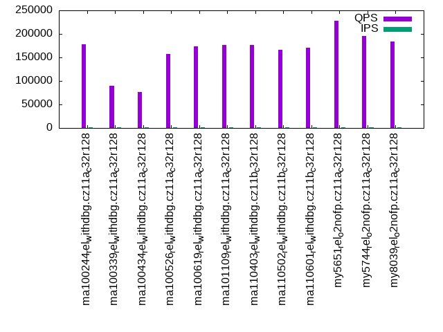
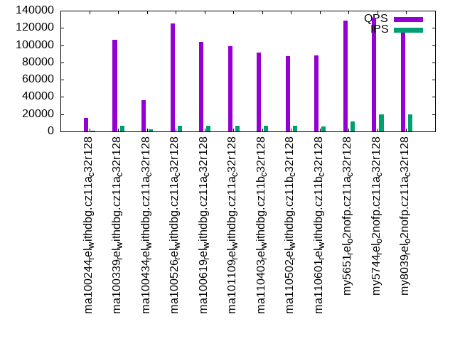

This is a report for the insert benchmark with 4000M docs and 20 client(s). It is generated by scripts (bash, awk, sed) and Tufte might not be impressed. An overview of the insert benchmark is here and a short update is here. Below, by DBMS, I mean DBMS+version.config. An example is my8020.c10b40 where my means MySQL, 8020 is version 8.0.20 and c10b40 is the name for the configuration file.
The test server is an ax162-s from Hetzner (see here) with 48 cores, AMD SMT disabled, 128G RAM and ext4 using 2 NVMe devices with SW RAID 1. The benchmark was run with 20 clients and there were 1 or 3 connections per client (1 for queries or inserts without rate limits, 1+1 for rate limited inserts+deletes). It uses 8 tables with a table per client. It loads 200M rows per table without secondary indexes, creates 3 secondary indexes per table, then inserts 4m+1m rows per table with a delete per insert to avoid growing the table. It then does 6 read+write tests for 1800s each that do queries as fast as possible with 100,100,500,500,1000,1000 inserts/s and the same for deletes/s per client concurrent with the queries. The database is larger than memory. Clients and the DBMS share one server.
The tested DBMS are:
The numbers are inserts/s for l.i0, l.i1 and l.i2, indexed docs (or rows) /s for l.x and queries/s for qr100, qp100 thru qr1000, qp1000" The values are the average rate over the entire test for inserts (IPS) and queries (QPS). The range of values for IPS and QPS is split into 3 parts: bottom 25%, middle 50%, top 25%. Values in the bottom 25% have a red background, values in the top 25% have a green background and values in the middle have no color. A gray background is used for values that can be ignored because the DBMS did not sustain the target insert rate. Red backgrounds are not used when the minimum value is within 80% of the max value.
| dbms | l.i0 | l.x | l.i1 | l.i2 | qr100 | qp100 | qr500 | qp500 | qr1000 | qp1000 |
|---|---|---|---|---|---|---|---|---|---|---|
| ma100244_rel_withdbg.cz11a_c32r128 | 715692 | 1542615 | 7547 | 4313 | 177416 | 16862 | 6247 | 3691 | 15683 | 7475 |
| ma100339_rel_withdbg.cz11a_c32r128 | 474552 | 1534919 | 7212 | 5797 | 90441 | 17668 | 123766 | 8079 | 106362 | 8818 |
| ma100434_rel_withdbg.cz11a_c32r128 | 479214 | 1544998 | 7147 | 5770 | 76292 | 17457 | 75498 | 7022 | 35996 | 8606 |
| ma100526_rel_withdbg.cz11a_c32r128 | 329001 | 1615509 | 6126 | 7366 | 156653 | 12272 | 110780 | 4886 | 124913 | 5426 |
| ma100619_rel_withdbg.cz11a_c32r128 | 322295 | 1558846 | 6523 | 7719 | 173808 | 18266 | 94512 | 8265 | 103364 | 6619 |
| ma101109_rel_withdbg.cz11a_c32r128 | 281057 | 1573564 | 6122 | 6812 | 176381 | 17765 | 94824 | 6840 | 99044 | 5145 |
| ma110403_rel_withdbg.cz11b_c32r128 | 284698 | 1523229 | 6262 | 7613 | 177008 | 17688 | 80329 | 6488 | 91584 | 5399 |
| ma110502_rel_withdbg.cz11b_c32r128 | 285103 | 1489758 | 6262 | 7758 | 165495 | 17272 | 78811 | 5937 | 86905 | 5492 |
| ma110601_rel_withdbg.cz11b_c32r128 | 278629 | 1498127 | 6203 | 7794 | 169872 | 17504 | 80371 | 5755 | 88476 | 5277 |
| my5651_rel_o2nofp.cz11a_c32r128 | 372648 | 307220 | 11217 | 4291 | 228196 | 6283 | 143779 | 4410 | 128294 | 5955 |
| my5744_rel_o2nofp.cz11a_c32r128 | 675447 | 1810774 | 14052 | 5816 | 195618 | 17455 | 150392 | 7713 | 131822 | 10254 |
| my8039_rel_o2nofp.cz11a_c32r128 | 1434206 | 1353180 | 16162 | 5682 | 183538 | 17203 | 160796 | 9033 | 119664 | 8645 |
This table has relative throughput, throughput for the DBMS relative to the DBMS in the first line, using the absolute throughput from the previous table. Values less than 0.95 have a yellow background. Values greater than 1.05 have a blue background.
| dbms | l.i0 | l.x | l.i1 | l.i2 | qr100 | qp100 | qr500 | qp500 | qr1000 | qp1000 |
|---|---|---|---|---|---|---|---|---|---|---|
| ma100244_rel_withdbg.cz11a_c32r128 | 1.00 | 1.00 | 1.00 | 1.00 | 1.00 | 1.00 | 1.00 | 1.00 | 1.00 | 1.00 |
| ma100339_rel_withdbg.cz11a_c32r128 | 0.66 | 1.00 | 0.96 | 1.34 | 0.51 | 1.05 | 19.81 | 2.19 | 6.78 | 1.18 |
| ma100434_rel_withdbg.cz11a_c32r128 | 0.67 | 1.00 | 0.95 | 1.34 | 0.43 | 1.04 | 12.09 | 1.90 | 2.30 | 1.15 |
| ma100526_rel_withdbg.cz11a_c32r128 | 0.46 | 1.05 | 0.81 | 1.71 | 0.88 | 0.73 | 17.73 | 1.32 | 7.96 | 0.73 |
| ma100619_rel_withdbg.cz11a_c32r128 | 0.45 | 1.01 | 0.86 | 1.79 | 0.98 | 1.08 | 15.13 | 2.24 | 6.59 | 0.89 |
| ma101109_rel_withdbg.cz11a_c32r128 | 0.39 | 1.02 | 0.81 | 1.58 | 0.99 | 1.05 | 15.18 | 1.85 | 6.32 | 0.69 |
| ma110403_rel_withdbg.cz11b_c32r128 | 0.40 | 0.99 | 0.83 | 1.77 | 1.00 | 1.05 | 12.86 | 1.76 | 5.84 | 0.72 |
| ma110502_rel_withdbg.cz11b_c32r128 | 0.40 | 0.97 | 0.83 | 1.80 | 0.93 | 1.02 | 12.62 | 1.61 | 5.54 | 0.73 |
| ma110601_rel_withdbg.cz11b_c32r128 | 0.39 | 0.97 | 0.82 | 1.81 | 0.96 | 1.04 | 12.87 | 1.56 | 5.64 | 0.71 |
| my5651_rel_o2nofp.cz11a_c32r128 | 0.52 | 0.20 | 1.49 | 0.99 | 1.29 | 0.37 | 23.02 | 1.19 | 8.18 | 0.80 |
| my5744_rel_o2nofp.cz11a_c32r128 | 0.94 | 1.17 | 1.86 | 1.35 | 1.10 | 1.04 | 24.07 | 2.09 | 8.41 | 1.37 |
| my8039_rel_o2nofp.cz11a_c32r128 | 2.00 | 0.88 | 2.14 | 1.32 | 1.03 | 1.02 | 25.74 | 2.45 | 7.63 | 1.16 |
This lists the average rate of inserts/s for the tests that do inserts concurrent with queries. For such tests the query rate is listed in the table above. The read+write tests are setup so that the insert rate should match the target rate every second. Cells that are not at least 95% of the target have a red background to indicate a failure to satisfy the target.
| dbms | qr100.L1 | qp100.L2 | qr500.L3 | qp500.L4 | qr1000.L5 | qp1000.L6 |
|---|---|---|---|---|---|---|
| ma100244_rel_withdbg.cz11a_c32r128 | 1977 | 1976 | 747 | 6056 | 886 | 4813 |
| ma100339_rel_withdbg.cz11a_c32r128 | 1976 | 1976 | 9704 | 6881 | 6479 | 5638 |
| ma100434_rel_withdbg.cz11a_c32r128 | 1976 | 1976 | 6272 | 6112 | 2433 | 5544 |
| ma100526_rel_withdbg.cz11a_c32r128 | 1976 | 1977 | 5417 | 4425 | 6179 | 3845 |
| ma100619_rel_withdbg.cz11a_c32r128 | 1976 | 1976 | 8490 | 4729 | 6540 | 5625 |
| ma101109_rel_withdbg.cz11a_c32r128 | 1976 | 1976 | 8411 | 3771 | 6235 | 4249 |
| ma110403_rel_withdbg.cz11b_c32r128 | 1976 | 1976 | 8459 | 3909 | 6319 | 4254 |
| ma110502_rel_withdbg.cz11b_c32r128 | 1976 | 1976 | 8046 | 4003 | 6332 | 4245 |
| ma110601_rel_withdbg.cz11b_c32r128 | 1976 | 1976 | 7732 | 4049 | 6104 | 4300 |
| my5651_rel_o2nofp.cz11a_c32r128 | 1977 | 1977 | 9885 | 9885 | 11378 | 3193 |
| my5744_rel_o2nofp.cz11a_c32r128 | 1977 | 1977 | 9885 | 9885 | 19748 | 10873 |
| my8039_rel_o2nofp.cz11a_c32r128 | 1977 | 1977 | 9885 | 9885 | 19769 | 12609 |
| target | 2000 | 2000 | 10000 | 10000 | 20000 | 20000 |
l.i0: load without secondary indexes. Graphs for performance per 1-second interval are here.
Average throughput:
Insert response time histogram: each cell has the percentage of responses that take <= the time in the header and max is the max response time in seconds. For the max column values in the top 25% of the range have a red background and in the bottom 25% of the range have a green background. The red background is not used when the min value is within 80% of the max value.
| dbms | 256us | 1ms | 4ms | 16ms | 64ms | 256ms | 1s | 4s | 16s | gt | max |
|---|---|---|---|---|---|---|---|---|---|---|---|
| ma100244_rel_withdbg.cz11a_c32r128 | 0.209 | 99.652 | 0.048 | 0.007 | 0.084 | 0.163 | |||||
| ma100339_rel_withdbg.cz11a_c32r128 | 0.085 | 99.015 | 0.571 | 0.018 | 0.113 | 0.199 | 0.621 | ||||
| ma100434_rel_withdbg.cz11a_c32r128 | 0.081 | 99.174 | 0.417 | 0.018 | 0.112 | 0.198 | 0.616 | ||||
| ma100526_rel_withdbg.cz11a_c32r128 | 0.071 | 2.358 | 97.235 | 0.135 | 0.101 | 0.101 | 0.639 | ||||
| ma100619_rel_withdbg.cz11a_c32r128 | 0.105 | 0.707 | 98.953 | 0.044 | 0.109 | 0.081 | 0.667 | ||||
| ma101109_rel_withdbg.cz11a_c32r128 | 0.074 | 0.255 | 99.427 | 0.043 | 0.108 | 0.094 | 0.666 | ||||
| ma110403_rel_withdbg.cz11b_c32r128 | 0.066 | 0.263 | 99.421 | 0.051 | 0.106 | 0.094 | 0.677 | ||||
| ma110502_rel_withdbg.cz11b_c32r128 | 0.067 | 0.245 | 99.443 | 0.048 | 0.107 | 0.090 | 0.677 | ||||
| ma110601_rel_withdbg.cz11b_c32r128 | 0.068 | 0.256 | 99.432 | 0.043 | 0.108 | 0.094 | 0.660 | ||||
| my5651_rel_o2nofp.cz11a_c32r128 | 0.169 | 11.159 | 88.166 | 0.470 | 0.037 | 0.163 | |||||
| my5744_rel_o2nofp.cz11a_c32r128 | 0.144 | 99.612 | 0.197 | 0.009 | 0.037 | 0.178 | |||||
| my8039_rel_o2nofp.cz11a_c32r128 | 0.086 | 99.802 | 0.060 | 0.014 | 0.038 | 0.228 |
Performance metrics for the DBMS listed above. Some are normalized by throughput, others are not. Legend for results is here.
ips qps rps rmbps wps wmbps rpq rkbpq wpi wkbpi csps cpups cspq cpupq dbgb1 dbgb2 rss maxop p50 p99 tag 715692 0 2 0.0 4922.1 259.0 0.000 0.000 0.007 0.371 85664 45.9 0.120 31 263.2 364.0 104.5 0.163 36760 31878 ma100244_rel_withdbg.cz11a_c32r128 474552 0 4 0.1 3553.9 188.8 0.000 0.000 0.007 0.407 67137 47.9 0.141 48 263.2 365.1 104.4 0.621 29768 200 ma100339_rel_withdbg.cz11a_c32r128 479214 0 3 0.0 3592.0 189.8 0.000 0.000 0.007 0.406 68101 47.9 0.142 48 263.2 365.1 NA 0.616 30067 200 ma100434_rel_withdbg.cz11a_c32r128 329001 0 2 0.0 4716.7 157.0 0.000 0.000 0.014 0.489 899115 49.7 2.733 73 263.2 365.2 101.9 0.639 18186 200 ma100526_rel_withdbg.cz11a_c32r128 322295 0 1 0.0 2261.7 94.4 0.000 0.000 0.007 0.300 877931 50.8 2.724 76 263.2 365.2 101.4 0.667 16882 200 ma100619_rel_withdbg.cz11a_c32r128 281057 0 2614 10.2 1995.5 84.6 0.009 0.037 0.007 0.308 251834 50.5 0.896 86 263.2 365.2 101.4 0.666 14684 200 ma101109_rel_withdbg.cz11a_c32r128 284698 0 2649 10.4 2030.6 85.8 0.009 0.037 0.007 0.309 256608 50.4 0.901 85 263.2 365.2 101.4 0.677 14884 200 ma110403_rel_withdbg.cz11b_c32r128 285103 0 2613 10.2 2033.4 85.9 0.009 0.037 0.007 0.309 249227 50.6 0.874 85 263.2 365.2 101.4 0.677 14884 200 ma110502_rel_withdbg.cz11b_c32r128 278629 0 2600 10.2 1987.2 84.1 0.009 0.037 0.007 0.309 254006 50.4 0.912 87 263.2 365.2 101.4 0.660 14584 200 ma110601_rel_withdbg.cz11b_c32r128 372648 0 2190 8.6 2479.8 133.2 0.006 0.024 0.007 0.366 141985 37.9 0.381 49 263.2 363.7 107.1 0.163 17687 15283 my5651_rel_o2nofp.cz11a_c32r128 675447 0 2 0.0 4543.4 241.8 0.000 0.000 0.007 0.367 83039 46.2 0.123 33 263.2 363.7 108.4 0.178 34264 29468 my5744_rel_o2nofp.cz11a_c32r128 1434206 0 4 0.0 9732.3 532.7 0.000 0.000 0.007 0.380 295453 55.2 0.206 18 262.3 362.8 108.6 0.228 74720 62333 my8039_rel_o2nofp.cz11a_c32r128
l.x: create secondary indexes.
Average throughput:
Performance metrics for the DBMS listed above. Some are normalized by throughput, others are not. Legend for results is here.
ips qps rps rmbps wps wmbps rpq rkbpq wpi wkbpi csps cpups cspq cpupq dbgb1 dbgb2 rss maxop p50 p99 tag 1542615 0 15236 1353.9 18873.5 1608.1 0.010 0.899 0.012 1.067 61776 20.7 0.040 6 605.8 706.6 105.1 0.001 NA NA ma100244_rel_withdbg.cz11a_c32r128 1534919 0 15332 1349.2 18863.2 1602.8 0.010 0.900 0.012 1.069 62783 20.9 0.041 7 605.8 707.7 104.7 0.006 NA NA ma100339_rel_withdbg.cz11a_c32r128 1544998 0 15417 1357.4 18973.0 1612.6 0.010 0.900 0.012 1.069 62285 20.8 0.040 6 599.6 701.5 NA 0.005 NA NA ma100434_rel_withdbg.cz11a_c32r128 1615509 0 15984 1415.6 19190.9 1599.8 0.010 0.897 0.012 1.014 99278 24.6 0.061 7 599.6 701.6 102.0 0.002 NA NA ma100526_rel_withdbg.cz11a_c32r128 1558846 0 16942 1387.3 18575.7 1546.8 0.011 0.911 0.012 1.016 90358 23.9 0.058 7 557.5 659.5 101.8 0.002 NA NA ma100619_rel_withdbg.cz11a_c32r128 1573564 0 17191 1407.8 18209.2 1551.0 0.011 0.916 0.012 1.009 78106 23.7 0.050 7 557.5 659.5 101.8 0.002 NA NA ma101109_rel_withdbg.cz11a_c32r128 1523229 0 16614 1355.4 19282.1 1511.1 0.011 0.911 0.013 1.016 83878 24.2 0.055 8 557.5 659.5 101.8 0.002 NA NA ma110403_rel_withdbg.cz11b_c32r128 1489758 0 16223 1320.3 18928.0 1477.2 0.011 0.908 0.013 1.015 85383 23.7 0.057 8 557.5 659.5 101.7 0.006 NA NA ma110502_rel_withdbg.cz11b_c32r128 1498127 0 16307 1328.3 18418.3 1479.4 0.011 0.908 0.012 1.011 83324 24.2 0.056 8 557.5 659.5 101.8 0.002 NA NA ma110601_rel_withdbg.cz11b_c32r128 307220 0 4078 268.1 17052.0 618.1 0.013 0.894 0.056 2.060 115635 35.1 0.376 55 557.3 657.8 105.9 0.003 NA NA my5651_rel_o2nofp.cz11a_c32r128 1810774 0 17967 1568.3 29878.3 1940.3 0.010 0.887 0.017 1.097 212459 26.2 0.117 7 605.8 706.3 105.4 0.002 NA NA my5744_rel_o2nofp.cz11a_c32r128 1353180 0 34149 1971.3 40424.4 1776.7 0.025 1.492 0.030 1.344 193770 57.0 0.143 20 603.6 704.2 104.9 0.017 NA NA my8039_rel_o2nofp.cz11a_c32r128
l.i1: continue load after secondary indexes created with 50 inserts per transaction. Graphs for performance per 1-second interval are here.
Average throughput:
Insert response time histogram: each cell has the percentage of responses that take <= the time in the header and max is the max response time in seconds. For the max column values in the top 25% of the range have a red background and in the bottom 25% of the range have a green background. The red background is not used when the min value is within 80% of the max value.
| dbms | 256us | 1ms | 4ms | 16ms | 64ms | 256ms | 1s | 4s | 16s | gt | max |
|---|---|---|---|---|---|---|---|---|---|---|---|
| ma100244_rel_withdbg.cz11a_c32r128 | 0.006 | 27.288 | 48.588 | 24.064 | 0.054 | 2.776 | |||||
| ma100339_rel_withdbg.cz11a_c32r128 | 0.011 | 25.850 | 46.404 | 27.734 | 0.583 | ||||||
| ma100434_rel_withdbg.cz11a_c32r128 | 0.007 | 24.358 | 47.602 | 28.033 | 0.790 | ||||||
| ma100526_rel_withdbg.cz11a_c32r128 | 0.018 | 7.681 | 67.134 | 25.168 | 0.889 | ||||||
| ma100619_rel_withdbg.cz11a_c32r128 | 0.039 | 17.372 | 58.165 | 24.418 | 0.001 | 0.003 | 0.002 | 64.809 | |||
| ma101109_rel_withdbg.cz11a_c32r128 | 1.204 | 16.009 | 57.842 | 24.942 | 0.001 | 0.001 | 0.002 | 128.400 | |||
| ma110403_rel_withdbg.cz11b_c32r128 | 1.917 | 15.311 | 57.804 | 24.950 | 0.008 | 0.005 | 0.005 | 104.927 | |||
| ma110502_rel_withdbg.cz11b_c32r128 | 1.660 | 15.599 | 57.551 | 25.171 | 0.010 | 0.005 | 0.005 | 105.027 | |||
| ma110601_rel_withdbg.cz11b_c32r128 | 1.649 | 16.045 | 56.109 | 26.179 | 0.011 | 0.003 | 0.003 | 37.836 | |||
| my5651_rel_o2nofp.cz11a_c32r128 | 0.002 | 4.257 | 64.223 | 11.713 | 19.805 | nonzero | 1.202 | ||||
| my5744_rel_o2nofp.cz11a_c32r128 | 0.023 | 30.127 | 42.640 | 12.458 | 14.752 | 0.368 | |||||
| my8039_rel_o2nofp.cz11a_c32r128 | 0.105 | 14.232 | 38.037 | 47.286 | 0.340 | 0.499 |
Delete response time histogram: each cell has the percentage of responses that take <= the time in the header and max is the max response time in seconds. For the max column values in the top 25% of the range have a red background and in the bottom 25% of the range have a green background. The red background is not used when the min value is within 80% of the max value.
| dbms | 256us | 1ms | 4ms | 16ms | 64ms | 256ms | 1s | 4s | 16s | gt | max |
|---|---|---|---|---|---|---|---|---|---|---|---|
| ma100244_rel_withdbg.cz11a_c32r128 | 0.137 | 66.115 | 10.299 | 23.448 | 0.001 | 1.295 | |||||
| ma100339_rel_withdbg.cz11a_c32r128 | 0.210 | 66.880 | 5.262 | 27.648 | 0.391 | ||||||
| ma100434_rel_withdbg.cz11a_c32r128 | 0.156 | 66.315 | 5.530 | 27.999 | 0.363 | ||||||
| ma100526_rel_withdbg.cz11a_c32r128 | 0.142 | 65.301 | 12.560 | 21.997 | 0.758 | ||||||
| ma100619_rel_withdbg.cz11a_c32r128 | 0.080 | 46.837 | 30.140 | 22.939 | 0.001 | 0.002 | nonzero | 49.231 | |||
| ma101109_rel_withdbg.cz11a_c32r128 | 9.959 | 24.433 | 43.130 | 22.475 | 0.001 | 0.001 | 0.002 | 87.473 | |||
| ma110403_rel_withdbg.cz11b_c32r128 | 10.032 | 19.980 | 45.904 | 24.073 | 0.006 | 0.003 | 0.002 | 102.879 | |||
| ma110502_rel_withdbg.cz11b_c32r128 | 9.818 | 20.099 | 45.781 | 24.291 | 0.007 | 0.003 | 0.002 | 101.049 | |||
| ma110601_rel_withdbg.cz11b_c32r128 | 9.951 | 19.572 | 45.359 | 25.109 | 0.005 | 0.002 | 0.002 | 37.324 | |||
| my5651_rel_o2nofp.cz11a_c32r128 | 1.698 | 36.236 | 42.081 | 0.178 | 19.807 | 0.786 | |||||
| my5744_rel_o2nofp.cz11a_c32r128 | 18.139 | 64.475 | 2.568 | 0.100 | 14.718 | 0.358 | |||||
| my8039_rel_o2nofp.cz11a_c32r128 | 18.776 | 19.593 | 29.076 | 32.556 | 0.194 |
Performance metrics for the DBMS listed above. Some are normalized by throughput, others are not. Legend for results is here.
ips qps rps rmbps wps wmbps rpq rkbpq wpi wkbpi csps cpups cspq cpupq dbgb1 dbgb2 rss maxop p50 p99 tag 7547 0 43526 680.1 75117.6 1523.0 5.767 92.274 9.953 206.638 499412 21.7 66.173 1380 817.7 920.5 104.6 2.776 200 100 ma100244_rel_withdbg.cz11a_c32r128 7212 0 43117 673.7 72239.5 1515.0 5.978 95.647 10.016 215.096 489097 17.9 67.813 1191 797.7 899.9 104.4 0.583 200 150 ma100339_rel_withdbg.cz11a_c32r128 7147 0 43133 674.0 72483.6 1516.0 6.035 96.559 10.141 217.201 490852 17.8 68.676 1195 798.4 900.8 NA 0.790 200 150 ma100434_rel_withdbg.cz11a_c32r128 6126 0 31992 499.9 32325.3 880.7 5.222 83.548 5.276 147.208 508868 9.7 83.060 760 780.7 883.8 101.7 0.889 300 100 ma100526_rel_withdbg.cz11a_c32r128 6523 0 38699 604.7 37954.2 1040.7 5.933 94.930 5.819 163.387 800107 15.7 122.667 1155 723.8 826.4 100.6 64.809 300 100 ma100619_rel_withdbg.cz11a_c32r128 6122 0 36608 568.0 35668.6 973.6 5.980 95.006 5.826 162.858 862195 14.3 140.840 1121 723.7 826.3 100.5 128.400 300 0 ma101109_rel_withdbg.cz11a_c32r128 6262 0 38408 596.0 37589.9 1007.8 6.133 97.454 6.003 164.789 868728 13.6 138.726 1042 725.0 827.7 100.5 104.927 300 0 ma110403_rel_withdbg.cz11b_c32r128 6262 0 38436 596.4 37607.2 1008.8 6.138 97.525 6.005 164.966 868822 13.8 138.741 1058 722.7 825.4 100.5 105.027 300 0 ma110502_rel_withdbg.cz11b_c32r128 6203 0 38328 594.8 37398.7 1003.9 6.179 98.184 6.029 165.712 862584 13.8 139.050 1068 723.4 826.0 100.8 37.836 300 100 ma110601_rel_withdbg.cz11b_c32r128 11217 0 28436 439.9 55817.3 1148.0 2.535 40.158 4.976 104.797 262964 15.9 23.443 680 820.6 933.8 105.5 1.202 200 150 my5651_rel_o2nofp.cz11a_c32r128 14052 0 34394 537.4 58896.9 1376.0 2.448 39.161 4.191 100.268 324387 21.0 23.084 717 820.2 933.8 107.6 0.368 200 150 my5744_rel_o2nofp.cz11a_c32r128 16162 0 36368 568.3 53216.8 1514.8 2.250 36.005 3.293 95.980 333511 20.7 20.636 615 818.4 935.0 107.6 0.499 699 300 my8039_rel_o2nofp.cz11a_c32r128
l.i2: continue load after secondary indexes created with 5 inserts per transaction. Graphs for performance per 1-second interval are here.
Average throughput:
Insert response time histogram: each cell has the percentage of responses that take <= the time in the header and max is the max response time in seconds. For the max column values in the top 25% of the range have a red background and in the bottom 25% of the range have a green background. The red background is not used when the min value is within 80% of the max value.
| dbms | 256us | 1ms | 4ms | 16ms | 64ms | 256ms | 1s | 4s | 16s | gt | max |
|---|---|---|---|---|---|---|---|---|---|---|---|
| ma100244_rel_withdbg.cz11a_c32r128 | 0.025 | 8.288 | 41.718 | 45.898 | 4.071 | 0.084 | |||||
| ma100339_rel_withdbg.cz11a_c32r128 | 0.057 | 13.299 | 47.642 | 38.466 | 0.537 | 0.087 | |||||
| ma100434_rel_withdbg.cz11a_c32r128 | nonzero | 0.049 | 13.165 | 47.503 | 38.686 | 0.597 | 0.078 | ||||
| ma100526_rel_withdbg.cz11a_c32r128 | nonzero | 0.037 | 11.120 | 62.858 | 25.572 | 0.412 | nonzero | 0.873 | |||
| ma100619_rel_withdbg.cz11a_c32r128 | 0.044 | 14.540 | 67.583 | 16.859 | 0.945 | 0.028 | 0.001 | 3.000 | |||
| ma101109_rel_withdbg.cz11a_c32r128 | 0.012 | 6.985 | 70.904 | 20.664 | 1.413 | 0.021 | 0.001 | 2.729 | |||
| ma110403_rel_withdbg.cz11b_c32r128 | 0.031 | 15.909 | 60.032 | 23.806 | 0.214 | 0.006 | nonzero | nonzero | 4.100 | ||
| ma110502_rel_withdbg.cz11b_c32r128 | 0.029 | 15.103 | 61.342 | 23.323 | 0.196 | 0.005 | 0.001 | 0.001 | 4.133 | ||
| ma110601_rel_withdbg.cz11b_c32r128 | 0.039 | 16.700 | 60.228 | 22.817 | 0.211 | 0.005 | 0.001 | 2.736 | |||
| my5651_rel_o2nofp.cz11a_c32r128 | nonzero | 0.100 | 8.647 | 45.284 | 37.499 | 8.469 | 0.099 | ||||
| my5744_rel_o2nofp.cz11a_c32r128 | nonzero | 4.845 | 37.688 | 18.560 | 38.817 | 0.089 | 0.089 | ||||
| my8039_rel_o2nofp.cz11a_c32r128 | 0.083 | 72.400 | 27.311 | 0.206 | 0.167 |
Delete response time histogram: each cell has the percentage of responses that take <= the time in the header and max is the max response time in seconds. For the max column values in the top 25% of the range have a red background and in the bottom 25% of the range have a green background. The red background is not used when the min value is within 80% of the max value.
| dbms | 256us | 1ms | 4ms | 16ms | 64ms | 256ms | 1s | 4s | 16s | gt | max |
|---|---|---|---|---|---|---|---|---|---|---|---|
| ma100244_rel_withdbg.cz11a_c32r128 | 0.138 | 23.437 | 27.311 | 46.063 | 3.052 | 0.081 | |||||
| ma100339_rel_withdbg.cz11a_c32r128 | nonzero | 0.258 | 30.532 | 30.864 | 38.071 | 0.275 | 0.082 | ||||
| ma100434_rel_withdbg.cz11a_c32r128 | 0.211 | 30.395 | 30.690 | 38.383 | 0.320 | 0.078 | |||||
| ma100526_rel_withdbg.cz11a_c32r128 | nonzero | 0.263 | 30.294 | 46.178 | 23.188 | 0.076 | 0.001 | 0.896 | |||
| ma100619_rel_withdbg.cz11a_c32r128 | nonzero | 0.225 | 30.306 | 55.128 | 13.614 | 0.717 | 0.009 | 0.001 | 3.000 | ||
| ma101109_rel_withdbg.cz11a_c32r128 | nonzero | 0.072 | 17.629 | 66.997 | 14.044 | 1.252 | 0.005 | nonzero | 2.727 | ||
| ma110403_rel_withdbg.cz11b_c32r128 | 0.086 | 25.395 | 54.241 | 20.077 | 0.197 | 0.004 | nonzero | nonzero | 4.100 | ||
| ma110502_rel_withdbg.cz11b_c32r128 | 0.074 | 24.398 | 55.665 | 19.684 | 0.173 | 0.004 | 0.001 | 0.001 | 4.133 | ||
| ma110601_rel_withdbg.cz11b_c32r128 | nonzero | 0.097 | 26.317 | 54.465 | 18.928 | 0.189 | 0.003 | 0.001 | 2.736 | ||
| my5651_rel_o2nofp.cz11a_c32r128 | 0.001 | 0.661 | 26.960 | 26.543 | 37.983 | 7.852 | 0.087 | ||||
| my5744_rel_o2nofp.cz11a_c32r128 | 0.001 | 52.885 | 8.316 | 0.137 | 38.653 | 0.007 | 0.082 | ||||
| my8039_rel_o2nofp.cz11a_c32r128 | 0.260 | 73.200 | 26.459 | 0.080 | 0.167 |
Performance metrics for the DBMS listed above. Some are normalized by throughput, others are not. Legend for results is here.
ips qps rps rmbps wps wmbps rpq rkbpq wpi wkbpi csps cpups cspq cpupq dbgb1 dbgb2 rss maxop p50 p99 tag 4313 0 39234 613.0 62762.3 1381.1 9.096 145.539 14.552 327.906 328236 16.6 76.102 1847 817.7 920.6 104.6 0.084 140 75 ma100244_rel_withdbg.cz11a_c32r128 5797 0 39246 613.2 60417.7 1361.9 6.770 108.318 10.422 240.558 384197 16.0 66.274 1325 797.7 899.9 104.4 0.087 175 75 ma100339_rel_withdbg.cz11a_c32r128 5770 0 39438 616.2 60927.1 1367.1 6.835 109.355 10.559 242.615 382659 15.9 66.315 1323 798.4 900.8 NA 0.078 175 75 ma100434_rel_withdbg.cz11a_c32r128 7366 0 32315 504.9 30984.3 856.2 4.387 70.188 4.206 119.024 512269 11.1 69.541 723 780.7 883.8 101.8 0.873 435 135 ma100526_rel_withdbg.cz11a_c32r128 7719 0 40824 637.9 35590.5 994.9 5.289 84.619 4.611 131.987 856961 17.9 111.020 1113 723.8 826.4 100.5 3.000 499 65 ma100619_rel_withdbg.cz11a_c32r128 6812 0 38701 586.1 31995.9 891.4 5.681 88.108 4.697 134.004 902625 15.7 132.507 1106 723.7 826.3 100.5 2.729 445 65 ma101109_rel_withdbg.cz11a_c32r128 7613 0 40314 608.8 33481.0 935.0 5.295 81.892 4.398 125.764 996146 16.3 130.845 1028 725.0 827.7 100.5 4.100 469 85 ma110403_rel_withdbg.cz11b_c32r128 7758 0 39922 602.4 33088.3 923.7 5.146 79.514 4.265 121.918 1012144 16.8 130.466 1039 722.7 825.4 100.5 4.133 479 100 ma110502_rel_withdbg.cz11b_c32r128 7794 0 39669 598.1 33118.2 924.0 5.090 78.585 4.249 121.394 1021902 16.8 131.111 1035 723.4 826.0 100.8 2.736 470 80 ma110601_rel_withdbg.cz11b_c32r128 4291 0 28931 440.0 52704.1 1041.3 6.742 105.008 12.283 248.512 257559 13.8 60.025 1544 820.6 933.8 105.0 0.099 115 65 my5651_rel_o2nofp.cz11a_c32r128 5816 0 36979 577.8 58818.5 1346.0 6.359 101.737 10.114 237.008 297757 16.6 51.200 1370 820.2 933.8 107.2 0.089 130 80 my5744_rel_o2nofp.cz11a_c32r128 5682 0 38736 605.3 50136.5 1439.4 6.818 109.082 8.824 259.410 335921 17.3 59.122 1462 818.4 932.1 106.0 0.167 140 80 my8039_rel_o2nofp.cz11a_c32r128
qr100.L1: range queries with 100 insert/s per client. Graphs for performance per 1-second interval are here.
Average throughput:
Query response time histogram: each cell has the percentage of responses that take <= the time in the header and max is the max response time in seconds. For max values in the top 25% of the range have a red background and in the bottom 25% of the range have a green background. The red background is not used when the min value is within 80% of the max value.
| dbms | 256us | 1ms | 4ms | 16ms | 64ms | 256ms | 1s | 4s | 16s | gt | max |
|---|---|---|---|---|---|---|---|---|---|---|---|
| ma100244_rel_withdbg.cz11a_c32r128 | 99.720 | 0.241 | 0.038 | nonzero | nonzero | 0.027 | |||||
| ma100339_rel_withdbg.cz11a_c32r128 | 83.263 | 13.283 | 3.453 | 0.001 | nonzero | 0.026 | |||||
| ma100434_rel_withdbg.cz11a_c32r128 | 78.466 | 16.371 | 5.163 | 0.001 | nonzero | 0.021 | |||||
| ma100526_rel_withdbg.cz11a_c32r128 | 99.731 | 0.237 | 0.030 | 0.002 | 0.001 | 0.055 | |||||
| ma100619_rel_withdbg.cz11a_c32r128 | 99.587 | 0.371 | 0.039 | 0.002 | nonzero | nonzero | 0.187 | ||||
| ma101109_rel_withdbg.cz11a_c32r128 | 99.633 | 0.330 | 0.034 | 0.003 | nonzero | 0.027 | |||||
| ma110403_rel_withdbg.cz11b_c32r128 | 99.584 | 0.375 | 0.039 | 0.002 | nonzero | nonzero | 0.154 | ||||
| ma110502_rel_withdbg.cz11b_c32r128 | 99.521 | 0.431 | 0.044 | 0.003 | nonzero | nonzero | 0.213 | ||||
| ma110601_rel_withdbg.cz11b_c32r128 | 99.548 | 0.409 | 0.040 | 0.002 | nonzero | nonzero | 0.190 | ||||
| my5651_rel_o2nofp.cz11a_c32r128 | 99.535 | 0.409 | 0.046 | 0.010 | nonzero | 0.023 | |||||
| my5744_rel_o2nofp.cz11a_c32r128 | 99.834 | 0.137 | 0.028 | nonzero | nonzero | 0.019 | |||||
| my8039_rel_o2nofp.cz11a_c32r128 | 99.889 | 0.107 | 0.003 | nonzero | 0.013 |
Insert response time histogram: each cell has the percentage of responses that take <= the time in the header and max is the max response time in seconds. For max values in the top 25% of the range have a red background and in the bottom 25% of the range have a green background. The red background is not used when the min value is within 80% of the max value.
| dbms | 256us | 1ms | 4ms | 16ms | 64ms | 256ms | 1s | 4s | 16s | gt | max |
|---|---|---|---|---|---|---|---|---|---|---|---|
| ma100244_rel_withdbg.cz11a_c32r128 | 63.179 | 36.821 | 0.043 | ||||||||
| ma100339_rel_withdbg.cz11a_c32r128 | 62.194 | 37.806 | 0.043 | ||||||||
| ma100434_rel_withdbg.cz11a_c32r128 | 61.701 | 38.299 | 0.044 | ||||||||
| ma100526_rel_withdbg.cz11a_c32r128 | 0.199 | 37.207 | 62.594 | 0.246 | |||||||
| ma100619_rel_withdbg.cz11a_c32r128 | 0.781 | 98.757 | 0.462 | 0.237 | |||||||
| ma101109_rel_withdbg.cz11a_c32r128 | 34.196 | 65.803 | 0.001 | 0.065 | |||||||
| ma110403_rel_withdbg.cz11b_c32r128 | 33.228 | 66.319 | 0.453 | 0.198 | |||||||
| ma110502_rel_withdbg.cz11b_c32r128 | 34.892 | 64.461 | 0.647 | 0.251 | |||||||
| ma110601_rel_withdbg.cz11b_c32r128 | 33.251 | 66.317 | 0.426 | 0.006 | 0.270 | ||||||
| my5651_rel_o2nofp.cz11a_c32r128 | 19.639 | 80.360 | 0.001 | 0.065 | |||||||
| my5744_rel_o2nofp.cz11a_c32r128 | 91.229 | 8.771 | 0.045 | ||||||||
| my8039_rel_o2nofp.cz11a_c32r128 | 95.174 | 4.826 | 0.037 |
Delete response time histogram: each cell has the percentage of responses that take <= the time in the header and max is the max response time in seconds. For max values in the top 25% of the range have a red background and in the bottom 25% of the range have a green background. The red background is not used when the min value is within 80% of the max value.
| dbms | 256us | 1ms | 4ms | 16ms | 64ms | 256ms | 1s | 4s | 16s | gt | max |
|---|---|---|---|---|---|---|---|---|---|---|---|
| ma100244_rel_withdbg.cz11a_c32r128 | 92.475 | 7.525 | 0.044 | ||||||||
| ma100339_rel_withdbg.cz11a_c32r128 | 95.529 | 4.471 | 0.041 | ||||||||
| ma100434_rel_withdbg.cz11a_c32r128 | 94.963 | 5.038 | 0.041 | ||||||||
| ma100526_rel_withdbg.cz11a_c32r128 | 0.567 | 51.525 | 47.908 | 0.153 | |||||||
| ma100619_rel_withdbg.cz11a_c32r128 | 3.157 | 96.660 | 0.183 | 0.228 | |||||||
| ma101109_rel_withdbg.cz11a_c32r128 | 73.415 | 26.585 | 0.055 | ||||||||
| ma110403_rel_withdbg.cz11b_c32r128 | 68.756 | 31.104 | 0.140 | 0.193 | |||||||
| ma110502_rel_withdbg.cz11b_c32r128 | 68.118 | 31.624 | 0.258 | 0.247 | |||||||
| ma110601_rel_withdbg.cz11b_c32r128 | 69.083 | 30.740 | 0.176 | 0.245 | |||||||
| my5651_rel_o2nofp.cz11a_c32r128 | 10.287 | 78.364 | 11.349 | 0.048 | |||||||
| my5744_rel_o2nofp.cz11a_c32r128 | 88.724 | 11.249 | 0.028 | 0.023 | |||||||
| my8039_rel_o2nofp.cz11a_c32r128 | 91.606 | 8.394 | 0.013 |
Performance metrics for the DBMS listed above. Some are normalized by throughput, others are not. Legend for results is here.
ips qps rps rmbps wps wmbps rpq rkbpq wpi wkbpi csps cpups cspq cpupq dbgb1 dbgb2 rss maxop p50 p99 tag 1977 177416 9260 144.7 11100.3 313.2 0.052 0.835 5.615 162.232 731510 45.2 4.123 122 817.7 920.6 104.5 0.027 9046 7543 ma100244_rel_withdbg.cz11a_c32r128 1976 90441 82143 1283.5 11775.4 331.6 0.908 14.532 5.960 171.853 546006 28.5 6.037 151 797.7 899.9 104.4 0.026 4843 2222 ma100339_rel_withdbg.cz11a_c32r128 1976 76292 89460 1397.8 11687.1 329.1 1.173 18.762 5.915 170.567 505969 27.1 6.632 171 798.4 900.8 NA 0.021 4171 2143 ma100434_rel_withdbg.cz11a_c32r128 1976 156653 9164 143.2 5454.7 152.9 0.058 0.936 2.761 79.254 701285 44.3 4.477 136 780.7 883.8 101.7 0.055 8007 7160 ma100526_rel_withdbg.cz11a_c32r128 1976 173808 9142 142.8 5944.9 167.3 0.053 0.842 3.009 86.693 738721 44.2 4.250 122 723.8 826.4 100.4 0.187 8854 7368 ma100619_rel_withdbg.cz11a_c32r128 1976 176381 9250 143.4 5991.3 168.0 0.052 0.833 3.032 87.084 733626 44.2 4.159 120 723.7 826.3 100.4 0.027 8950 7419 ma101109_rel_withdbg.cz11a_c32r128 1976 177008 9276 143.7 5988.0 168.4 0.052 0.832 3.031 87.268 738233 44.2 4.171 120 725.0 827.7 100.4 0.154 9017 7544 ma110403_rel_withdbg.cz11b_c32r128 1976 165495 9271 143.7 5985.6 168.3 0.056 0.889 3.029 87.232 696295 44.3 4.207 128 722.7 825.4 100.4 0.213 8455 6681 ma110502_rel_withdbg.cz11b_c32r128 1976 169872 9285 143.9 5991.7 168.6 0.055 0.867 3.033 87.402 710973 44.1 4.185 125 723.4 826.0 100.4 0.190 8618 7016 ma110601_rel_withdbg.cz11b_c32r128 1977 228196 9331 145.0 8547.0 240.7 0.041 0.651 4.323 124.691 925144 43.7 4.054 92 820.6 933.8 105.0 0.023 11667 9829 my5651_rel_o2nofp.cz11a_c32r128 1977 195618 9243 144.4 9273.8 261.3 0.047 0.756 4.691 135.340 793233 45.0 4.055 110 820.2 933.8 107.2 0.019 9861 8266 my5744_rel_o2nofp.cz11a_c32r128 1977 183538 8290 129.5 9300.2 267.9 0.045 0.723 4.704 138.770 746909 45.3 4.070 118 818.4 932.1 106.0 0.013 9366 8711 my8039_rel_o2nofp.cz11a_c32r128
qp100.L2: point queries with 100 insert/s per client. Graphs for performance per 1-second interval are here.
Average throughput:
Query response time histogram: each cell has the percentage of responses that take <= the time in the header and max is the max response time in seconds. For max values in the top 25% of the range have a red background and in the bottom 25% of the range have a green background. The red background is not used when the min value is within 80% of the max value.
| dbms | 256us | 1ms | 4ms | 16ms | 64ms | 256ms | 1s | 4s | 16s | gt | max |
|---|---|---|---|---|---|---|---|---|---|---|---|
| ma100244_rel_withdbg.cz11a_c32r128 | 0.006 | 46.981 | 52.105 | 0.876 | 0.032 | 0.053 | |||||
| ma100339_rel_withdbg.cz11a_c32r128 | 0.005 | 45.294 | 54.568 | 0.132 | nonzero | 0.030 | |||||
| ma100434_rel_withdbg.cz11a_c32r128 | 0.002 | 42.859 | 57.041 | 0.098 | nonzero | 0.022 | |||||
| ma100526_rel_withdbg.cz11a_c32r128 | 0.001 | 25.543 | 70.642 | 3.749 | 0.065 | 0.050 | |||||
| ma100619_rel_withdbg.cz11a_c32r128 | 0.007 | 57.838 | 41.744 | 0.376 | 0.034 | 0.001 | 0.250 | ||||
| ma101109_rel_withdbg.cz11a_c32r128 | 0.005 | 55.347 | 44.153 | 0.433 | 0.060 | 0.002 | 0.251 | ||||
| ma110403_rel_withdbg.cz11b_c32r128 | 0.006 | 55.848 | 43.607 | 0.470 | 0.066 | 0.003 | nonzero | 0.301 | |||
| ma110502_rel_withdbg.cz11b_c32r128 | 0.003 | 50.145 | 49.456 | 0.339 | 0.054 | 0.003 | 0.245 | ||||
| ma110601_rel_withdbg.cz11b_c32r128 | 0.004 | 53.835 | 45.664 | 0.420 | 0.073 | 0.003 | 0.208 | ||||
| my5651_rel_o2nofp.cz11a_c32r128 | 0.002 | 14.936 | 61.161 | 23.155 | 0.747 | nonzero | 0.066 | ||||
| my5744_rel_o2nofp.cz11a_c32r128 | 0.006 | 45.029 | 54.685 | 0.280 | nonzero | 0.022 | |||||
| my8039_rel_o2nofp.cz11a_c32r128 | 0.003 | 51.040 | 48.122 | 0.836 | nonzero | 0.017 |
Insert response time histogram: each cell has the percentage of responses that take <= the time in the header and max is the max response time in seconds. For max values in the top 25% of the range have a red background and in the bottom 25% of the range have a green background. The red background is not used when the min value is within 80% of the max value.
| dbms | 256us | 1ms | 4ms | 16ms | 64ms | 256ms | 1s | 4s | 16s | gt | max |
|---|---|---|---|---|---|---|---|---|---|---|---|
| ma100244_rel_withdbg.cz11a_c32r128 | 0.110 | 71.082 | 28.589 | 0.219 | 0.327 | ||||||
| ma100339_rel_withdbg.cz11a_c32r128 | 2.800 | 94.843 | 2.357 | 0.105 | |||||||
| ma100434_rel_withdbg.cz11a_c32r128 | 2.233 | 96.493 | 1.274 | 0.123 | |||||||
| ma100526_rel_withdbg.cz11a_c32r128 | 0.018 | 52.794 | 47.186 | 0.001 | 0.256 | ||||||
| ma100619_rel_withdbg.cz11a_c32r128 | 0.192 | 89.789 | 9.938 | 0.082 | 0.316 | ||||||
| ma101109_rel_withdbg.cz11a_c32r128 | 0.207 | 87.782 | 11.378 | 0.633 | 0.401 | ||||||
| ma110403_rel_withdbg.cz11b_c32r128 | 0.239 | 88.954 | 10.310 | 0.497 | 0.437 | ||||||
| ma110502_rel_withdbg.cz11b_c32r128 | 0.136 | 91.233 | 8.167 | 0.464 | 0.429 | ||||||
| ma110601_rel_withdbg.cz11b_c32r128 | 0.197 | 87.919 | 11.379 | 0.504 | 0.421 | ||||||
| my5651_rel_o2nofp.cz11a_c32r128 | 0.628 | 58.760 | 40.608 | 0.004 | 0.271 | ||||||
| my5744_rel_o2nofp.cz11a_c32r128 | 34.858 | 64.061 | 1.081 | 0.137 | |||||||
| my8039_rel_o2nofp.cz11a_c32r128 | 42.807 | 57.165 | 0.028 | 0.084 |
Delete response time histogram: each cell has the percentage of responses that take <= the time in the header and max is the max response time in seconds. For max values in the top 25% of the range have a red background and in the bottom 25% of the range have a green background. The red background is not used when the min value is within 80% of the max value.
| dbms | 256us | 1ms | 4ms | 16ms | 64ms | 256ms | 1s | 4s | 16s | gt | max |
|---|---|---|---|---|---|---|---|---|---|---|---|
| ma100244_rel_withdbg.cz11a_c32r128 | 0.800 | 81.924 | 17.276 | 0.255 | |||||||
| ma100339_rel_withdbg.cz11a_c32r128 | 30.612 | 68.839 | 0.549 | 0.091 | |||||||
| ma100434_rel_withdbg.cz11a_c32r128 | 27.467 | 72.207 | 0.326 | 0.097 | |||||||
| ma100526_rel_withdbg.cz11a_c32r128 | 0.067 | 74.589 | 25.344 | 0.167 | |||||||
| ma100619_rel_withdbg.cz11a_c32r128 | 0.344 | 92.061 | 7.590 | 0.004 | 0.287 | ||||||
| ma101109_rel_withdbg.cz11a_c32r128 | 0.335 | 90.314 | 9.286 | 0.065 | 0.336 | ||||||
| ma110403_rel_withdbg.cz11b_c32r128 | 0.369 | 90.604 | 8.872 | 0.154 | 0.437 | ||||||
| ma110502_rel_withdbg.cz11b_c32r128 | 0.318 | 92.193 | 7.329 | 0.160 | 0.439 | ||||||
| ma110601_rel_withdbg.cz11b_c32r128 | 0.358 | 89.474 | 9.978 | 0.190 | 0.373 | ||||||
| my5651_rel_o2nofp.cz11a_c32r128 | 5.694 | 81.994 | 11.744 | 0.567 | 0.160 | ||||||
| my5744_rel_o2nofp.cz11a_c32r128 | 20.619 | 78.906 | 0.475 | 0.039 | |||||||
| my8039_rel_o2nofp.cz11a_c32r128 | 82.588 | 17.413 | 0.013 |
Performance metrics for the DBMS listed above. Some are normalized by throughput, others are not. Legend for results is here.
ips qps rps rmbps wps wmbps rpq rkbpq wpi wkbpi csps cpups cspq cpupq dbgb1 dbgb2 rss maxop p50 p99 tag 1976 16862 125199 1956.2 22602.3 469.1 7.425 118.800 11.440 243.136 446168 19.1 26.460 544 817.7 920.6 104.5 0.053 895 240 ma100244_rel_withdbg.cz11a_c32r128 1976 17668 131481 2054.4 19755.1 443.1 7.442 119.068 9.999 229.629 421659 16.2 23.866 440 797.7 899.9 104.4 0.030 927 591 ma100339_rel_withdbg.cz11a_c32r128 1976 17457 131131 2048.9 20032.3 445.2 7.512 120.188 10.139 230.753 427021 16.2 24.462 445 798.4 900.8 NA 0.022 911 575 ma100434_rel_withdbg.cz11a_c32r128 1977 12272 96388 1506.0 12360.9 337.7 7.854 125.662 6.253 174.908 615714 13.7 50.173 536 780.7 883.8 101.8 0.050 671 160 ma100526_rel_withdbg.cz11a_c32r128 1976 18266 133726 2089.5 12560.8 346.7 7.321 117.135 6.357 179.691 473601 14.8 25.928 389 723.8 826.4 100.4 0.250 959 224 ma100619_rel_withdbg.cz11a_c32r128 1976 17765 130543 2038.6 12551.9 345.3 7.348 117.507 6.353 178.982 519686 15.8 29.254 427 723.7 826.3 100.4 0.251 943 192 ma101109_rel_withdbg.cz11a_c32r128 1976 17688 129650 2024.7 12430.2 343.0 7.330 117.209 6.291 177.771 515228 15.6 29.128 423 725.0 827.7 100.4 0.301 943 176 ma110403_rel_withdbg.cz11b_c32r128 1976 17272 127134 1985.3 12409.8 342.5 7.361 117.703 6.281 177.501 501011 16.1 29.007 447 722.7 825.4 100.4 0.245 911 176 ma110502_rel_withdbg.cz11b_c32r128 1976 17504 128557 2007.5 12416.4 342.7 7.344 117.444 6.284 177.608 515961 16.0 29.477 439 723.4 826.0 100.4 0.208 943 176 ma110601_rel_withdbg.cz11b_c32r128 1977 6283 56963 889.2 26335.0 449.2 9.066 144.929 13.321 232.672 350608 27.7 55.803 2116 820.6 933.8 104.9 0.066 320 208 my5651_rel_o2nofp.cz11a_c32r128 1977 17455 128418 2006.8 21573.9 481.8 7.357 117.727 10.913 249.562 408073 16.9 23.379 465 820.2 933.8 107.2 0.022 927 272 my5744_rel_o2nofp.cz11a_c32r128 1977 17203 126426 1975.4 17480.6 490.4 7.349 117.583 8.842 254.000 373425 16.7 21.707 466 818.4 932.1 106.1 0.017 911 368 my8039_rel_o2nofp.cz11a_c32r128
qr500.L3: range queries with 500 insert/s per client. Graphs for performance per 1-second interval are here.
Average throughput:
Query response time histogram: each cell has the percentage of responses that take <= the time in the header and max is the max response time in seconds. For max values in the top 25% of the range have a red background and in the bottom 25% of the range have a green background. The red background is not used when the min value is within 80% of the max value.
| dbms | 256us | 1ms | 4ms | 16ms | 64ms | 256ms | 1s | 4s | 16s | gt | max |
|---|---|---|---|---|---|---|---|---|---|---|---|
| ma100244_rel_withdbg.cz11a_c32r128 | 88.304 | 7.096 | 1.830 | 0.533 | 1.032 | 0.892 | 0.303 | 0.011 | nonzero | 9.892 | |
| ma100339_rel_withdbg.cz11a_c32r128 | 96.251 | 3.044 | 0.657 | 0.039 | 0.009 | 0.001 | nonzero | 0.602 | |||
| ma100434_rel_withdbg.cz11a_c32r128 | 95.938 | 3.304 | 0.626 | 0.035 | 0.052 | 0.036 | 0.009 | nonzero | 2.418 | ||
| ma100526_rel_withdbg.cz11a_c32r128 | 95.567 | 3.096 | 1.266 | 0.063 | 0.007 | 0.001 | nonzero | 0.422 | |||
| ma100619_rel_withdbg.cz11a_c32r128 | 93.253 | 5.205 | 1.314 | 0.174 | 0.048 | 0.005 | 0.001 | 0.417 | |||
| ma101109_rel_withdbg.cz11a_c32r128 | 93.258 | 5.400 | 1.117 | 0.158 | 0.060 | 0.006 | 0.001 | 0.385 | |||
| ma110403_rel_withdbg.cz11b_c32r128 | 92.517 | 5.871 | 1.189 | 0.269 | 0.145 | 0.008 | nonzero | 0.410 | |||
| ma110502_rel_withdbg.cz11b_c32r128 | 92.099 | 6.168 | 1.325 | 0.271 | 0.129 | 0.008 | nonzero | 0.401 | |||
| ma110601_rel_withdbg.cz11b_c32r128 | 92.182 | 6.161 | 1.256 | 0.261 | 0.133 | 0.007 | nonzero | 0.380 | |||
| my5651_rel_o2nofp.cz11a_c32r128 | 95.152 | 3.782 | 0.957 | 0.106 | 0.003 | nonzero | 0.107 | ||||
| my5744_rel_o2nofp.cz11a_c32r128 | 97.825 | 1.888 | 0.277 | 0.009 | 0.001 | 0.041 | |||||
| my8039_rel_o2nofp.cz11a_c32r128 | 99.284 | 0.687 | 0.027 | 0.002 | nonzero | 0.031 |
Insert response time histogram: each cell has the percentage of responses that take <= the time in the header and max is the max response time in seconds. For max values in the top 25% of the range have a red background and in the bottom 25% of the range have a green background. The red background is not used when the min value is within 80% of the max value.
| dbms | 256us | 1ms | 4ms | 16ms | 64ms | 256ms | 1s | 4s | 16s | gt | max |
|---|---|---|---|---|---|---|---|---|---|---|---|
| ma100244_rel_withdbg.cz11a_c32r128 | 1.137 | 18.977 | 21.172 | 14.631 | 36.589 | 7.494 | nonzero | 17.136 | |||
| ma100339_rel_withdbg.cz11a_c32r128 | 5.301 | 77.487 | 16.811 | 0.398 | 0.003 | 1.309 | |||||
| ma100434_rel_withdbg.cz11a_c32r128 | 5.237 | 78.660 | 11.974 | 1.809 | 2.148 | 0.171 | 7.861 | ||||
| ma100526_rel_withdbg.cz11a_c32r128 | 0.116 | 4.915 | 65.455 | 29.514 | 0.785 | ||||||
| ma100619_rel_withdbg.cz11a_c32r128 | 0.508 | 49.727 | 36.555 | 13.208 | 0.002 | 1.077 | |||||
| ma101109_rel_withdbg.cz11a_c32r128 | 6.011 | 51.984 | 25.444 | 16.561 | 0.979 | ||||||
| ma110403_rel_withdbg.cz11b_c32r128 | 7.521 | 44.047 | 35.467 | 12.964 | 0.973 | ||||||
| ma110502_rel_withdbg.cz11b_c32r128 | 5.338 | 44.671 | 34.207 | 15.784 | 0.720 | ||||||
| ma110601_rel_withdbg.cz11b_c32r128 | 5.311 | 37.793 | 41.132 | 15.764 | 0.723 | ||||||
| my5651_rel_o2nofp.cz11a_c32r128 | 0.393 | 92.809 | 6.794 | 0.004 | 0.348 | ||||||
| my5744_rel_o2nofp.cz11a_c32r128 | 2.189 | 89.023 | 8.787 | 0.176 | |||||||
| my8039_rel_o2nofp.cz11a_c32r128 | 16.750 | 82.219 | 1.031 | 0.117 |
Delete response time histogram: each cell has the percentage of responses that take <= the time in the header and max is the max response time in seconds. For max values in the top 25% of the range have a red background and in the bottom 25% of the range have a green background. The red background is not used when the min value is within 80% of the max value.
| dbms | 256us | 1ms | 4ms | 16ms | 64ms | 256ms | 1s | 4s | 16s | gt | max |
|---|---|---|---|---|---|---|---|---|---|---|---|
| ma100244_rel_withdbg.cz11a_c32r128 | 4.260 | 22.742 | 20.530 | 19.967 | 30.994 | 1.506 | 11.897 | ||||
| ma100339_rel_withdbg.cz11a_c32r128 | 11.691 | 80.413 | 7.734 | 0.161 | 0.001 | 1.279 | |||||
| ma100434_rel_withdbg.cz11a_c32r128 | 12.845 | 74.877 | 9.072 | 1.674 | 1.521 | 0.012 | 6.062 | ||||
| ma100526_rel_withdbg.cz11a_c32r128 | 0.280 | 28.161 | 44.979 | 26.579 | 0.735 | ||||||
| ma100619_rel_withdbg.cz11a_c32r128 | 0.730 | 58.710 | 29.015 | 11.544 | 0.001 | 1.133 | |||||
| ma101109_rel_withdbg.cz11a_c32r128 | 24.117 | 39.489 | 22.092 | 14.301 | 0.949 | ||||||
| ma110403_rel_withdbg.cz11b_c32r128 | 17.323 | 39.464 | 31.558 | 11.654 | 0.970 | ||||||
| ma110502_rel_withdbg.cz11b_c32r128 | 15.475 | 39.499 | 30.379 | 14.647 | 0.678 | ||||||
| ma110601_rel_withdbg.cz11b_c32r128 | 12.593 | 36.531 | 36.093 | 14.783 | 0.667 | ||||||
| my5651_rel_o2nofp.cz11a_c32r128 | 1.620 | 64.537 | 33.837 | 0.006 | 0.119 | ||||||
| my5744_rel_o2nofp.cz11a_c32r128 | 12.206 | 79.207 | 8.588 | 0.061 | |||||||
| my8039_rel_o2nofp.cz11a_c32r128 | 42.736 | 56.812 | 0.452 | 0.049 |
Performance metrics for the DBMS listed above. Some are normalized by throughput, others are not. Legend for results is here.
ips qps rps rmbps wps wmbps rpq rkbpq wpi wkbpi csps cpups cspq cpupq dbgb1 dbgb2 rss maxop p50 p99 tag 747 6247 3123 48.8 3918.1 88.0 0.500 8.000 5.246 120.648 59501 7.0 9.525 538 817.7 920.6 104.6 9.892 112 0 ma100244_rel_withdbg.cz11a_c32r128 9704 123766 42616 665.9 66573.2 1410.9 0.344 5.509 6.861 148.894 806208 53.7 6.514 208 797.7 899.9 104.4 0.602 6553 1439 ma100339_rel_withdbg.cz11a_c32r128 6272 75498 27902 436.0 43016.5 920.9 0.370 5.913 6.859 150.359 500458 35.3 6.629 224 798.4 900.8 NA 2.418 5546 32 ma100434_rel_withdbg.cz11a_c32r128 5417 110780 30628 478.6 30248.6 836.0 0.276 4.424 5.584 158.048 829107 47.0 7.484 204 780.7 883.8 101.8 0.422 5706 2650 ma100526_rel_withdbg.cz11a_c32r128 8490 94512 34929 545.8 34091.9 944.1 0.370 5.913 4.015 113.864 1051465 42.9 11.125 218 724.0 826.6 100.6 0.417 4668 2830 ma100619_rel_withdbg.cz11a_c32r128 8411 94824 35558 550.5 34632.1 955.3 0.375 5.945 4.117 116.300 1061765 41.6 11.197 211 724.0 826.6 100.6 0.385 4715 2573 ma101109_rel_withdbg.cz11a_c32r128 8459 80329 34911 540.7 32875.5 909.2 0.435 6.893 3.887 110.068 1098327 37.5 13.673 224 725.3 828.0 100.6 0.410 3773 1711 ma110403_rel_withdbg.cz11b_c32r128 8046 78811 35383 548.1 32932.9 911.5 0.449 7.122 4.093 115.999 1042121 38.3 13.223 233 723.0 825.6 100.7 0.401 3724 1806 ma110502_rel_withdbg.cz11b_c32r128 7732 80371 35386 548.5 32864.3 909.6 0.440 6.988 4.250 120.460 1097294 38.5 13.653 230 723.7 826.3 100.6 0.380 3788 1774 ma110601_rel_withdbg.cz11b_c32r128 9885 143779 31582 489.7 56549.0 1090.3 0.220 3.487 5.721 112.948 822765 48.8 5.722 163 820.6 933.8 105.0 0.107 7576 1215 my5651_rel_o2nofp.cz11a_c32r128 9885 150392 38005 593.8 58704.3 1290.7 0.253 4.043 5.939 133.708 834383 58.1 5.548 185 820.2 933.8 107.2 0.041 7672 5850 my5744_rel_o2nofp.cz11a_c32r128 9885 160796 37394 584.3 45903.2 1278.1 0.233 3.721 4.644 132.408 814123 54.9 5.063 164 818.4 932.1 106.1 0.031 8135 7163 my8039_rel_o2nofp.cz11a_c32r128
qp500.L4: point queries with 500 insert/s per client. Graphs for performance per 1-second interval are here.
Average throughput:
Query response time histogram: each cell has the percentage of responses that take <= the time in the header and max is the max response time in seconds. For max values in the top 25% of the range have a red background and in the bottom 25% of the range have a green background. The red background is not used when the min value is within 80% of the max value.
| dbms | 256us | 1ms | 4ms | 16ms | 64ms | 256ms | 1s | 4s | 16s | gt | max |
|---|---|---|---|---|---|---|---|---|---|---|---|
| ma100244_rel_withdbg.cz11a_c32r128 | 0.056 | 79.489 | 19.686 | 0.185 | 0.276 | 0.283 | 0.025 | 3.620 | |||
| ma100339_rel_withdbg.cz11a_c32r128 | nonzero | 1.910 | 89.741 | 8.173 | 0.157 | 0.018 | nonzero | 0.414 | |||
| ma100434_rel_withdbg.cz11a_c32r128 | nonzero | 1.423 | 90.795 | 7.514 | 0.125 | 0.086 | 0.055 | 0.002 | 2.358 | ||
| ma100526_rel_withdbg.cz11a_c32r128 | nonzero | 2.373 | 74.586 | 20.329 | 2.603 | 0.109 | 0.215 | ||||
| ma100619_rel_withdbg.cz11a_c32r128 | nonzero | 8.715 | 81.643 | 9.033 | 0.603 | 0.002 | 0.004 | 0.375 | |||
| ma101109_rel_withdbg.cz11a_c32r128 | nonzero | 8.197 | 77.844 | 11.671 | 2.276 | 0.008 | 0.004 | 0.350 | |||
| ma110403_rel_withdbg.cz11b_c32r128 | nonzero | 8.275 | 75.885 | 13.488 | 2.335 | 0.011 | 0.005 | 0.364 | |||
| ma110502_rel_withdbg.cz11b_c32r128 | nonzero | 6.871 | 75.240 | 14.927 | 2.944 | 0.011 | 0.007 | 0.379 | |||
| ma110601_rel_withdbg.cz11b_c32r128 | nonzero | 7.451 | 73.701 | 15.594 | 3.231 | 0.016 | 0.007 | 0.349 | |||
| my5651_rel_o2nofp.cz11a_c32r128 | 1.137 | 55.042 | 42.853 | 0.967 | 0.053 | ||||||
| my5744_rel_o2nofp.cz11a_c32r128 | 0.429 | 90.145 | 9.389 | 0.037 | 0.036 | ||||||
| my8039_rel_o2nofp.cz11a_c32r128 | nonzero | 7.351 | 83.312 | 9.326 | 0.011 | 0.026 |
Insert response time histogram: each cell has the percentage of responses that take <= the time in the header and max is the max response time in seconds. For max values in the top 25% of the range have a red background and in the bottom 25% of the range have a green background. The red background is not used when the min value is within 80% of the max value.
| dbms | 256us | 1ms | 4ms | 16ms | 64ms | 256ms | 1s | 4s | 16s | gt | max |
|---|---|---|---|---|---|---|---|---|---|---|---|
| ma100244_rel_withdbg.cz11a_c32r128 | 0.042 | 96.424 | 1.438 | 0.379 | 1.041 | 0.675 | 14.693 | ||||
| ma100339_rel_withdbg.cz11a_c32r128 | 0.154 | 65.149 | 11.684 | 22.990 | 0.023 | 1.671 | |||||
| ma100434_rel_withdbg.cz11a_c32r128 | 0.069 | 70.057 | 7.119 | 21.921 | 0.724 | 0.110 | 9.983 | ||||
| ma100526_rel_withdbg.cz11a_c32r128 | 0.004 | 0.354 | 62.564 | 37.077 | 0.628 | ||||||
| ma100619_rel_withdbg.cz11a_c32r128 | 0.232 | 24.983 | 23.931 | 50.854 | 0.988 | ||||||
| ma101109_rel_withdbg.cz11a_c32r128 | 0.004 | 11.724 | 20.341 | 67.931 | 0.793 | ||||||
| ma110403_rel_withdbg.cz11b_c32r128 | 0.017 | 14.397 | 21.066 | 64.520 | 0.872 | ||||||
| ma110502_rel_withdbg.cz11b_c32r128 | 0.039 | 15.507 | 23.012 | 61.442 | 0.786 | ||||||
| ma110601_rel_withdbg.cz11b_c32r128 | 0.021 | 15.611 | 25.707 | 58.661 | 0.805 | ||||||
| my5651_rel_o2nofp.cz11a_c32r128 | 0.222 | 64.732 | 35.032 | 0.014 | 0.327 | ||||||
| my5744_rel_o2nofp.cz11a_c32r128 | 2.080 | 95.774 | 2.146 | 0.221 | |||||||
| my8039_rel_o2nofp.cz11a_c32r128 | 12.871 | 86.998 | 0.131 | 0.135 |
Delete response time histogram: each cell has the percentage of responses that take <= the time in the header and max is the max response time in seconds. For max values in the top 25% of the range have a red background and in the bottom 25% of the range have a green background. The red background is not used when the min value is within 80% of the max value.
| dbms | 256us | 1ms | 4ms | 16ms | 64ms | 256ms | 1s | 4s | 16s | gt | max |
|---|---|---|---|---|---|---|---|---|---|---|---|
| ma100244_rel_withdbg.cz11a_c32r128 | 0.310 | 96.777 | 0.874 | 0.531 | 1.320 | 0.188 | 10.316 | ||||
| ma100339_rel_withdbg.cz11a_c32r128 | 0.805 | 66.482 | 9.556 | 23.156 | 0.001 | 1.203 | |||||
| ma100434_rel_withdbg.cz11a_c32r128 | 0.600 | 71.773 | 4.847 | 22.199 | 0.575 | 0.007 | 5.476 | ||||
| ma100526_rel_withdbg.cz11a_c32r128 | 0.010 | 12.442 | 54.734 | 32.814 | 0.578 | ||||||
| ma100619_rel_withdbg.cz11a_c32r128 | 0.792 | 26.986 | 21.203 | 51.018 | 0.981 | ||||||
| ma101109_rel_withdbg.cz11a_c32r128 | 0.049 | 12.999 | 25.152 | 61.800 | 0.718 | ||||||
| ma110403_rel_withdbg.cz11b_c32r128 | 0.053 | 15.607 | 22.188 | 62.152 | 0.728 | ||||||
| ma110502_rel_withdbg.cz11b_c32r128 | 0.084 | 16.733 | 24.709 | 58.474 | 0.743 | ||||||
| ma110601_rel_withdbg.cz11b_c32r128 | 0.078 | 16.804 | 27.617 | 55.500 | 0.752 | ||||||
| my5651_rel_o2nofp.cz11a_c32r128 | 0.239 | 23.019 | 73.856 | 2.886 | 0.251 | ||||||
| my5744_rel_o2nofp.cz11a_c32r128 | 5.164 | 92.155 | 2.681 | nonzero | 0.077 | ||||||
| my8039_rel_o2nofp.cz11a_c32r128 | 28.848 | 70.028 | 1.124 | 0.050 |
Performance metrics for the DBMS listed above. Some are normalized by throughput, others are not. Legend for results is here.
ips qps rps rmbps wps wmbps rpq rkbpq wpi wkbpi csps cpups cspq cpupq dbgb1 dbgb2 rss maxop p50 p99 tag 6056 3691 61682 963.8 48880.4 991.0 16.713 267.412 8.071 167.553 320266 16.0 86.779 2081 817.7 920.6 104.6 3.620 272 0 ma100244_rel_withdbg.cz11a_c32r128 6881 8079 106850 1669.5 66325.4 1411.1 13.226 211.618 9.639 210.008 550984 23.0 68.203 1367 797.7 899.9 104.4 0.414 384 32 ma100339_rel_withdbg.cz11a_c32r128 6112 7022 94294 1473.3 59034.3 1253.8 13.429 214.857 9.659 210.068 456978 19.3 65.079 1319 798.4 900.8 NA 2.358 368 0 ma100434_rel_withdbg.cz11a_c32r128 4425 4886 63678 995.0 27706.6 762.5 13.034 208.542 6.262 176.462 640251 11.7 131.049 1150 780.7 883.9 101.8 0.215 288 64 ma100526_rel_withdbg.cz11a_c32r128 4729 8265 104770 1637.0 35630.5 989.6 12.676 202.813 7.534 214.270 819683 18.7 99.172 1086 724.1 826.8 100.6 0.375 432 80 ma100619_rel_withdbg.cz11a_c32r128 3771 6840 85557 1334.7 28539.1 789.8 12.508 199.817 7.568 214.463 1097140 19.3 160.401 1354 724.1 826.8 100.6 0.350 368 48 ma101109_rel_withdbg.cz11a_c32r128 3909 6488 82583 1288.1 29008.2 804.7 12.729 203.319 7.421 210.803 1098779 19.0 169.366 1406 725.3 828.0 100.6 0.364 336 64 ma110403_rel_withdbg.cz11b_c32r128 4003 5937 77490 1208.5 28364.3 786.3 13.053 208.454 7.086 201.166 1135061 19.5 191.194 1577 723.0 825.7 100.6 0.379 288 48 ma110502_rel_withdbg.cz11b_c32r128 4049 5755 75658 1179.9 27806.5 771.1 13.147 209.950 6.867 195.000 1160120 19.5 201.588 1626 723.7 826.3 100.6 0.349 256 48 ma110601_rel_withdbg.cz11b_c32r128 9885 4410 55773 867.6 39751.7 700.4 12.647 201.463 4.022 72.563 526032 40.0 119.287 4354 820.6 933.8 105.0 0.053 224 144 my5651_rel_o2nofp.cz11a_c32r128 9885 7713 105547 1649.2 67221.0 1398.4 13.684 218.949 6.801 144.863 505929 26.9 65.594 1674 820.2 933.8 107.2 0.036 400 128 my5744_rel_o2nofp.cz11a_c32r128 9885 9033 108421 1694.1 47732.9 1328.5 12.003 192.052 4.829 137.630 426771 22.5 47.247 1196 818.4 932.1 106.0 0.026 463 240 my8039_rel_o2nofp.cz11a_c32r128
qr1000.L5: range queries with 1000 insert/s per client. Graphs for performance per 1-second interval are here.
Average throughput:
Query response time histogram: each cell has the percentage of responses that take <= the time in the header and max is the max response time in seconds. For max values in the top 25% of the range have a red background and in the bottom 25% of the range have a green background. The red background is not used when the min value is within 80% of the max value.
| dbms | 256us | 1ms | 4ms | 16ms | 64ms | 256ms | 1s | 4s | 16s | gt | max |
|---|---|---|---|---|---|---|---|---|---|---|---|
| ma100244_rel_withdbg.cz11a_c32r128 | 91.645 | 5.633 | 1.667 | 0.216 | 0.388 | 0.341 | 0.108 | 0.003 | nonzero | 9.425 | |
| ma100339_rel_withdbg.cz11a_c32r128 | 93.559 | 4.698 | 1.717 | 0.025 | 0.001 | 0.059 | |||||
| ma100434_rel_withdbg.cz11a_c32r128 | 91.625 | 5.988 | 1.822 | 0.178 | 0.229 | 0.134 | 0.025 | nonzero | nonzero | 5.974 | |
| ma100526_rel_withdbg.cz11a_c32r128 | 95.759 | 3.868 | 0.317 | 0.049 | 0.006 | 0.001 | 0.172 | ||||
| ma100619_rel_withdbg.cz11a_c32r128 | 93.109 | 5.389 | 1.332 | 0.157 | 0.010 | 0.002 | nonzero | 0.377 | |||
| ma101109_rel_withdbg.cz11a_c32r128 | 92.743 | 5.583 | 1.432 | 0.218 | 0.022 | 0.002 | nonzero | 0.357 | |||
| ma110403_rel_withdbg.cz11b_c32r128 | 92.534 | 5.753 | 1.343 | 0.310 | 0.058 | 0.002 | nonzero | 0.365 | |||
| ma110502_rel_withdbg.cz11b_c32r128 | 92.047 | 6.100 | 1.466 | 0.322 | 0.062 | 0.002 | nonzero | 0.390 | |||
| ma110601_rel_withdbg.cz11b_c32r128 | 92.419 | 5.764 | 1.440 | 0.311 | 0.064 | 0.002 | nonzero | 0.344 | |||
| my5651_rel_o2nofp.cz11a_c32r128 | 94.767 | 3.982 | 1.207 | 0.043 | 0.001 | nonzero | nonzero | 0.401 | |||
| my5744_rel_o2nofp.cz11a_c32r128 | 96.944 | 2.460 | 0.570 | 0.025 | nonzero | 0.034 | |||||
| my8039_rel_o2nofp.cz11a_c32r128 | 95.984 | 3.116 | 0.887 | 0.013 | nonzero | 0.029 |
Insert response time histogram: each cell has the percentage of responses that take <= the time in the header and max is the max response time in seconds. For max values in the top 25% of the range have a red background and in the bottom 25% of the range have a green background. The red background is not used when the min value is within 80% of the max value.
| dbms | 256us | 1ms | 4ms | 16ms | 64ms | 256ms | 1s | 4s | 16s | gt | max |
|---|---|---|---|---|---|---|---|---|---|---|---|
| ma100244_rel_withdbg.cz11a_c32r128 | 0.187 | 5.050 | 17.431 | 45.414 | 25.028 | 6.891 | 13.732 | ||||
| ma100339_rel_withdbg.cz11a_c32r128 | 0.037 | 15.905 | 48.206 | 35.851 | 0.350 | ||||||
| ma100434_rel_withdbg.cz11a_c32r128 | 0.401 | 12.332 | 30.510 | 46.886 | 9.324 | 0.548 | 9.352 | ||||
| ma100526_rel_withdbg.cz11a_c32r128 | 0.001 | 7.118 | 64.928 | 27.953 | 0.767 | ||||||
| ma100619_rel_withdbg.cz11a_c32r128 | 0.041 | 15.094 | 58.767 | 26.097 | 0.001 | 1.128 | |||||
| ma101109_rel_withdbg.cz11a_c32r128 | 0.893 | 16.800 | 55.613 | 26.694 | 0.949 | ||||||
| ma110403_rel_withdbg.cz11b_c32r128 | 1.339 | 17.440 | 54.362 | 26.859 | 0.847 | ||||||
| ma110502_rel_withdbg.cz11b_c32r128 | 1.436 | 18.060 | 53.907 | 26.596 | 0.923 | ||||||
| ma110601_rel_withdbg.cz11b_c32r128 | 0.809 | 17.433 | 52.777 | 28.981 | 0.908 | ||||||
| my5651_rel_o2nofp.cz11a_c32r128 | nonzero | 27.152 | 55.712 | 0.521 | 16.616 | 0.321 | |||||
| my5744_rel_o2nofp.cz11a_c32r128 | 56.614 | 43.172 | 0.214 | 0.159 | |||||||
| my8039_rel_o2nofp.cz11a_c32r128 | nonzero | 35.224 | 64.740 | 0.036 | 0.099 |
Delete response time histogram: each cell has the percentage of responses that take <= the time in the header and max is the max response time in seconds. For max values in the top 25% of the range have a red background and in the bottom 25% of the range have a green background. The red background is not used when the min value is within 80% of the max value.
| dbms | 256us | 1ms | 4ms | 16ms | 64ms | 256ms | 1s | 4s | 16s | gt | max |
|---|---|---|---|---|---|---|---|---|---|---|---|
| ma100244_rel_withdbg.cz11a_c32r128 | 1.514 | 9.313 | 16.514 | 47.583 | 23.793 | 1.282 | 12.782 | ||||
| ma100339_rel_withdbg.cz11a_c32r128 | 0.204 | 48.272 | 15.691 | 35.833 | 0.327 | ||||||
| ma100434_rel_withdbg.cz11a_c32r128 | 1.979 | 28.659 | 17.280 | 45.603 | 6.432 | 0.048 | 8.266 | ||||
| ma100526_rel_withdbg.cz11a_c32r128 | 0.003 | 56.616 | 18.402 | 24.978 | 0.680 | ||||||
| ma100619_rel_withdbg.cz11a_c32r128 | 0.073 | 36.867 | 37.613 | 25.447 | nonzero | 1.042 | |||||
| ma101109_rel_withdbg.cz11a_c32r128 | 10.273 | 16.492 | 48.571 | 24.664 | 0.919 | ||||||
| ma110403_rel_withdbg.cz11b_c32r128 | 7.570 | 17.881 | 48.543 | 26.006 | 0.841 | ||||||
| ma110502_rel_withdbg.cz11b_c32r128 | 8.316 | 18.055 | 47.892 | 25.737 | 0.940 | ||||||
| ma110601_rel_withdbg.cz11b_c32r128 | 6.806 | 18.153 | 47.039 | 28.002 | 0.921 | ||||||
| my5651_rel_o2nofp.cz11a_c32r128 | 26.672 | 52.383 | 4.112 | 0.057 | 16.776 | 0.305 | |||||
| my5744_rel_o2nofp.cz11a_c32r128 | 82.347 | 17.478 | 0.175 | 0.040 | |||||||
| my8039_rel_o2nofp.cz11a_c32r128 | 27.508 | 69.473 | 3.019 | 0.053 |
Performance metrics for the DBMS listed above. Some are normalized by throughput, others are not. Legend for results is here.
ips qps rps rmbps wps wmbps rpq rkbpq wpi wkbpi csps cpups cspq cpupq dbgb1 dbgb2 rss maxop p50 p99 tag 886 15683 5907 92.3 8080.8 184.6 0.377 6.026 9.121 213.339 110027 11.1 7.016 340 817.7 920.7 104.6 9.425 224 0 ma100244_rel_withdbg.cz11a_c32r128 6479 106362 37893 592.1 59544.4 1316.0 0.356 5.700 9.190 207.981 768898 55.0 7.229 248 797.7 899.9 104.4 0.059 5899 3421 ma100339_rel_withdbg.cz11a_c32r128 2433 35996 15699 245.3 21746.8 497.8 0.436 6.978 8.938 209.479 269006 21.2 7.473 283 798.4 900.8 NA 5.974 591 16 ma100434_rel_withdbg.cz11a_c32r128 6179 124913 30122 470.6 29602.7 818.3 0.241 3.858 4.791 135.606 915163 47.8 7.326 184 780.7 884.0 101.8 0.172 6363 4875 ma100526_rel_withdbg.cz11a_c32r128 6540 103364 36892 576.4 35681.3 991.3 0.357 5.711 5.456 155.220 1040184 45.9 10.063 213 724.1 826.9 100.7 0.377 5180 3086 ma100619_rel_withdbg.cz11a_c32r128 6235 99044 34701 538.7 33275.5 921.0 0.350 5.570 5.337 151.270 1094931 43.9 11.055 213 724.1 826.9 100.7 0.357 4555 2493 ma101109_rel_withdbg.cz11a_c32r128 6319 91584 35759 555.2 33619.7 934.0 0.390 6.208 5.320 151.347 1130405 41.7 12.343 219 725.3 828.1 100.7 0.365 4475 1998 ma110403_rel_withdbg.cz11b_c32r128 6332 86905 35663 553.7 33569.0 932.5 0.410 6.524 5.301 150.792 1106446 41.8 12.732 231 723.0 825.7 100.7 0.390 4251 1263 ma110502_rel_withdbg.cz11b_c32r128 6104 88476 36344 564.5 33930.3 942.9 0.411 6.533 5.559 158.191 1097630 41.8 12.406 227 723.7 826.4 100.7 0.344 4827 831 ma110601_rel_withdbg.cz11b_c32r128 11378 128294 27920 431.7 53077.6 1045.9 0.218 3.446 4.665 94.130 711939 49.1 5.549 184 820.6 933.8 105.0 0.401 6635 1039 my5651_rel_o2nofp.cz11a_c32r128 19748 131822 38970 608.9 65907.4 1459.1 0.296 4.730 3.337 75.661 753128 58.7 5.713 214 820.2 933.8 107.2 0.034 6795 2701 my5744_rel_o2nofp.cz11a_c32r128 19769 119664 36933 577.1 48339.8 1389.8 0.309 4.938 2.445 71.989 678256 59.3 5.668 238 818.4 932.9 106.0 0.029 5929 5114 my8039_rel_o2nofp.cz11a_c32r128
qp1000.L6: point queries with 1000 insert/s per client. Graphs for performance per 1-second interval are here.
Average throughput:
Query response time histogram: each cell has the percentage of responses that take <= the time in the header and max is the max response time in seconds. For max values in the top 25% of the range have a red background and in the bottom 25% of the range have a green background. The red background is not used when the min value is within 80% of the max value.
| dbms | 256us | 1ms | 4ms | 16ms | 64ms | 256ms | 1s | 4s | 16s | gt | max |
|---|---|---|---|---|---|---|---|---|---|---|---|
| ma100244_rel_withdbg.cz11a_c32r128 | nonzero | 1.965 | 90.861 | 6.821 | 0.269 | 0.045 | 0.037 | 0.002 | 2.856 | ||
| ma100339_rel_withdbg.cz11a_c32r128 | nonzero | 2.537 | 92.430 | 4.927 | 0.069 | 0.025 | 0.011 | nonzero | 1.516 | ||
| ma100434_rel_withdbg.cz11a_c32r128 | nonzero | 2.230 | 92.578 | 5.069 | 0.074 | 0.034 | 0.016 | nonzero | 1.839 | ||
| ma100526_rel_withdbg.cz11a_c32r128 | nonzero | 1.231 | 77.714 | 19.021 | 1.995 | 0.039 | 0.197 | ||||
| ma100619_rel_withdbg.cz11a_c32r128 | nonzero | 7.637 | 76.904 | 13.471 | 1.981 | 0.002 | 0.004 | 0.370 | |||
| ma101109_rel_withdbg.cz11a_c32r128 | nonzero | 6.758 | 73.157 | 15.276 | 4.777 | 0.031 | 0.003 | 0.348 | |||
| ma110403_rel_withdbg.cz11b_c32r128 | nonzero | 7.569 | 72.449 | 16.155 | 3.794 | 0.029 | 0.004 | 0.365 | |||
| ma110502_rel_withdbg.cz11b_c32r128 | nonzero | 6.796 | 73.889 | 15.707 | 3.576 | 0.028 | 0.004 | 0.356 | |||
| ma110601_rel_withdbg.cz11b_c32r128 | nonzero | 6.897 | 72.506 | 16.578 | 3.981 | 0.034 | 0.005 | 0.371 | |||
| my5651_rel_o2nofp.cz11a_c32r128 | nonzero | 7.982 | 68.041 | 23.020 | 0.957 | nonzero | 0.068 | ||||
| my5744_rel_o2nofp.cz11a_c32r128 | nonzero | 2.242 | 96.343 | 1.396 | 0.019 | 0.040 | |||||
| my8039_rel_o2nofp.cz11a_c32r128 | nonzero | 4.860 | 85.374 | 9.750 | 0.015 | 0.061 |
Insert response time histogram: each cell has the percentage of responses that take <= the time in the header and max is the max response time in seconds. For max values in the top 25% of the range have a red background and in the bottom 25% of the range have a green background. The red background is not used when the min value is within 80% of the max value.
| dbms | 256us | 1ms | 4ms | 16ms | 64ms | 256ms | 1s | 4s | 16s | gt | max |
|---|---|---|---|---|---|---|---|---|---|---|---|
| ma100244_rel_withdbg.cz11a_c32r128 | 0.009 | 15.317 | 35.534 | 48.461 | 0.502 | 0.178 | 12.401 | ||||
| ma100339_rel_withdbg.cz11a_c32r128 | 0.015 | 36.975 | 14.942 | 47.802 | 0.256 | 0.009 | 5.680 | ||||
| ma100434_rel_withdbg.cz11a_c32r128 | 0.034 | 35.988 | 15.730 | 47.878 | 0.346 | 0.023 | 6.261 | ||||
| ma100526_rel_withdbg.cz11a_c32r128 | 0.026 | 8.212 | 33.803 | 57.958 | nonzero | 1.483 | |||||
| ma100619_rel_withdbg.cz11a_c32r128 | 0.016 | 23.775 | 41.047 | 35.161 | 0.734 | ||||||
| ma101109_rel_withdbg.cz11a_c32r128 | 0.017 | 18.919 | 26.387 | 54.677 | 0.814 | ||||||
| ma110403_rel_withdbg.cz11b_c32r128 | 0.010 | 18.284 | 26.764 | 54.942 | 0.796 | ||||||
| ma110502_rel_withdbg.cz11b_c32r128 | 0.008 | 18.590 | 26.237 | 55.165 | 0.928 | ||||||
| ma110601_rel_withdbg.cz11b_c32r128 | 0.008 | 18.644 | 27.314 | 54.033 | 0.800 | ||||||
| my5651_rel_o2nofp.cz11a_c32r128 | 0.084 | 7.555 | 5.249 | 87.111 | 0.715 | ||||||
| my5744_rel_o2nofp.cz11a_c32r128 | 40.753 | 39.901 | 0.750 | 18.596 | 0.342 | ||||||
| my8039_rel_o2nofp.cz11a_c32r128 | nonzero | 7.312 | 29.467 | 63.220 | 0.001 | 0.265 |
Delete response time histogram: each cell has the percentage of responses that take <= the time in the header and max is the max response time in seconds. For max values in the top 25% of the range have a red background and in the bottom 25% of the range have a green background. The red background is not used when the min value is within 80% of the max value.
| dbms | 256us | 1ms | 4ms | 16ms | 64ms | 256ms | 1s | 4s | 16s | gt | max |
|---|---|---|---|---|---|---|---|---|---|---|---|
| ma100244_rel_withdbg.cz11a_c32r128 | 0.051 | 22.595 | 28.240 | 48.560 | 0.522 | 0.032 | 13.216 | ||||
| ma100339_rel_withdbg.cz11a_c32r128 | 0.181 | 42.932 | 8.943 | 47.781 | 0.163 | nonzero | 4.512 | ||||
| ma100434_rel_withdbg.cz11a_c32r128 | 0.223 | 42.598 | 9.067 | 47.873 | 0.238 | 0.001 | 4.919 | ||||
| ma100526_rel_withdbg.cz11a_c32r128 | 0.062 | 19.449 | 23.977 | 56.512 | nonzero | 1.461 | |||||
| ma100619_rel_withdbg.cz11a_c32r128 | 0.019 | 28.664 | 37.396 | 33.920 | 0.703 | ||||||
| ma101109_rel_withdbg.cz11a_c32r128 | 0.080 | 20.470 | 31.576 | 47.875 | 0.806 | ||||||
| ma110403_rel_withdbg.cz11b_c32r128 | 0.044 | 19.524 | 27.865 | 52.567 | 0.751 | ||||||
| ma110502_rel_withdbg.cz11b_c32r128 | 0.045 | 19.823 | 27.044 | 53.088 | 0.794 | ||||||
| ma110601_rel_withdbg.cz11b_c32r128 | 0.032 | 19.962 | 28.442 | 51.564 | 0.727 | ||||||
| my5651_rel_o2nofp.cz11a_c32r128 | 0.403 | 6.583 | 5.642 | 0.347 | 87.026 | 0.646 | |||||
| my5744_rel_o2nofp.cz11a_c32r128 | 23.388 | 56.086 | 1.633 | 0.058 | 18.835 | 0.330 | |||||
| my8039_rel_o2nofp.cz11a_c32r128 | 2.437 | 19.883 | 21.146 | 56.534 | 0.254 |
Performance metrics for the DBMS listed above. Some are normalized by throughput, others are not. Legend for results is here.
ips qps rps rmbps wps wmbps rpq rkbpq wpi wkbpi csps cpups cspq cpupq dbgb1 dbgb2 rss maxop p50 p99 tag 4813 7475 94639 1478.8 55890.8 1184.4 12.661 202.574 11.613 252.010 480360 26.4 64.261 1695 817.7 920.7 104.6 2.856 464 0 ma100244_rel_withdbg.cz11a_c32r128 5638 8818 108709 1698.6 60701.0 1316.1 12.328 197.250 10.766 239.026 519020 21.8 58.860 1187 797.7 900.0 104.4 1.516 511 0 ma100339_rel_withdbg.cz11a_c32r128 5544 8606 106949 1671.1 59841.1 1295.7 12.428 198.845 10.795 239.339 511696 21.6 59.461 1205 798.4 900.9 NA 1.839 496 0 ma100434_rel_withdbg.cz11a_c32r128 3845 5426 67302 1051.6 26167.9 722.2 12.404 198.460 6.806 192.345 658937 12.1 121.441 1070 780.7 884.1 101.8 0.197 288 80 ma100526_rel_withdbg.cz11a_c32r128 5625 6619 89568 1399.5 34550.2 958.2 13.531 216.501 6.142 174.436 964996 19.4 145.785 1407 724.2 826.9 100.7 0.370 320 80 ma100619_rel_withdbg.cz11a_c32r128 4249 5145 68951 1075.1 26209.6 724.2 13.403 213.993 6.168 174.533 1213545 19.4 235.887 1810 724.1 826.9 100.6 0.348 208 32 ma101109_rel_withdbg.cz11a_c32r128 4254 5399 72009 1122.9 27554.0 763.9 13.337 212.961 6.477 183.867 1177901 19.1 218.154 1698 725.4 828.2 100.6 0.365 224 48 ma110403_rel_withdbg.cz11b_c32r128 4245 5492 73196 1141.4 27818.3 771.2 13.328 212.826 6.554 186.057 1167802 19.4 212.645 1696 723.2 825.9 100.6 0.356 224 48 ma110502_rel_withdbg.cz11b_c32r128 4300 5277 70787 1103.8 27280.3 756.3 13.415 214.188 6.344 180.109 1195635 19.6 226.579 1783 723.7 826.4 100.6 0.371 208 48 ma110601_rel_withdbg.cz11b_c32r128 3193 5955 58808 917.6 29200.2 500.7 9.875 157.779 9.144 160.560 403310 31.4 67.723 2531 820.6 933.9 105.0 0.068 304 208 my5651_rel_o2nofp.cz11a_c32r128 10873 10254 117615 1837.7 54530.4 1255.7 11.470 183.529 5.015 118.259 459660 26.9 44.829 1259 820.2 933.8 107.2 0.040 543 240 my5744_rel_o2nofp.cz11a_c32r128 12609 8645 106609 1665.8 47165.1 1337.3 12.331 197.304 3.740 108.604 464367 26.9 53.713 1494 818.4 934.5 106.0 0.061 448 240 my8039_rel_o2nofp.cz11a_c32r128
l.i0: load without secondary indexes
Performance metrics for all DBMS, not just the ones listed above. Some are normalized by throughput, others are not. Legend for results is here.
ips qps rps rmbps wps wmbps rpq rkbpq wpi wkbpi csps cpups cspq cpupq dbgb1 dbgb2 rss maxop p50 p99 tag 715692 0 2 0.0 4922.1 259.0 0.000 0.000 0.007 0.371 85664 45.9 0.120 31 263.2 364.0 104.5 0.163 36760 31878 ma100244_rel_withdbg.cz11a_c32r128 474552 0 4 0.1 3553.9 188.8 0.000 0.000 0.007 0.407 67137 47.9 0.141 48 263.2 365.1 104.4 0.621 29768 200 ma100339_rel_withdbg.cz11a_c32r128 479214 0 3 0.0 3592.0 189.8 0.000 0.000 0.007 0.406 68101 47.9 0.142 48 263.2 365.1 NA 0.616 30067 200 ma100434_rel_withdbg.cz11a_c32r128 329001 0 2 0.0 4716.7 157.0 0.000 0.000 0.014 0.489 899115 49.7 2.733 73 263.2 365.2 101.9 0.639 18186 200 ma100526_rel_withdbg.cz11a_c32r128 322295 0 1 0.0 2261.7 94.4 0.000 0.000 0.007 0.300 877931 50.8 2.724 76 263.2 365.2 101.4 0.667 16882 200 ma100619_rel_withdbg.cz11a_c32r128 281057 0 2614 10.2 1995.5 84.6 0.009 0.037 0.007 0.308 251834 50.5 0.896 86 263.2 365.2 101.4 0.666 14684 200 ma101109_rel_withdbg.cz11a_c32r128 284698 0 2649 10.4 2030.6 85.8 0.009 0.037 0.007 0.309 256608 50.4 0.901 85 263.2 365.2 101.4 0.677 14884 200 ma110403_rel_withdbg.cz11b_c32r128 285103 0 2613 10.2 2033.4 85.9 0.009 0.037 0.007 0.309 249227 50.6 0.874 85 263.2 365.2 101.4 0.677 14884 200 ma110502_rel_withdbg.cz11b_c32r128 278629 0 2600 10.2 1987.2 84.1 0.009 0.037 0.007 0.309 254006 50.4 0.912 87 263.2 365.2 101.4 0.660 14584 200 ma110601_rel_withdbg.cz11b_c32r128 372648 0 2190 8.6 2479.8 133.2 0.006 0.024 0.007 0.366 141985 37.9 0.381 49 263.2 363.7 107.1 0.163 17687 15283 my5651_rel_o2nofp.cz11a_c32r128 675447 0 2 0.0 4543.4 241.8 0.000 0.000 0.007 0.367 83039 46.2 0.123 33 263.2 363.7 108.4 0.178 34264 29468 my5744_rel_o2nofp.cz11a_c32r128 1434206 0 4 0.0 9732.3 532.7 0.000 0.000 0.007 0.380 295453 55.2 0.206 18 262.3 362.8 108.6 0.228 74720 62333 my8039_rel_o2nofp.cz11a_c32r128
l.x: create secondary indexes
Performance metrics for all DBMS, not just the ones listed above. Some are normalized by throughput, others are not. Legend for results is here.
ips qps rps rmbps wps wmbps rpq rkbpq wpi wkbpi csps cpups cspq cpupq dbgb1 dbgb2 rss maxop p50 p99 tag 1542615 0 15236 1353.9 18873.5 1608.1 0.010 0.899 0.012 1.067 61776 20.7 0.040 6 605.8 706.6 105.1 0.001 NA NA ma100244_rel_withdbg.cz11a_c32r128 1534919 0 15332 1349.2 18863.2 1602.8 0.010 0.900 0.012 1.069 62783 20.9 0.041 7 605.8 707.7 104.7 0.006 NA NA ma100339_rel_withdbg.cz11a_c32r128 1544998 0 15417 1357.4 18973.0 1612.6 0.010 0.900 0.012 1.069 62285 20.8 0.040 6 599.6 701.5 NA 0.005 NA NA ma100434_rel_withdbg.cz11a_c32r128 1615509 0 15984 1415.6 19190.9 1599.8 0.010 0.897 0.012 1.014 99278 24.6 0.061 7 599.6 701.6 102.0 0.002 NA NA ma100526_rel_withdbg.cz11a_c32r128 1558846 0 16942 1387.3 18575.7 1546.8 0.011 0.911 0.012 1.016 90358 23.9 0.058 7 557.5 659.5 101.8 0.002 NA NA ma100619_rel_withdbg.cz11a_c32r128 1573564 0 17191 1407.8 18209.2 1551.0 0.011 0.916 0.012 1.009 78106 23.7 0.050 7 557.5 659.5 101.8 0.002 NA NA ma101109_rel_withdbg.cz11a_c32r128 1523229 0 16614 1355.4 19282.1 1511.1 0.011 0.911 0.013 1.016 83878 24.2 0.055 8 557.5 659.5 101.8 0.002 NA NA ma110403_rel_withdbg.cz11b_c32r128 1489758 0 16223 1320.3 18928.0 1477.2 0.011 0.908 0.013 1.015 85383 23.7 0.057 8 557.5 659.5 101.7 0.006 NA NA ma110502_rel_withdbg.cz11b_c32r128 1498127 0 16307 1328.3 18418.3 1479.4 0.011 0.908 0.012 1.011 83324 24.2 0.056 8 557.5 659.5 101.8 0.002 NA NA ma110601_rel_withdbg.cz11b_c32r128 307220 0 4078 268.1 17052.0 618.1 0.013 0.894 0.056 2.060 115635 35.1 0.376 55 557.3 657.8 105.9 0.003 NA NA my5651_rel_o2nofp.cz11a_c32r128 1810774 0 17967 1568.3 29878.3 1940.3 0.010 0.887 0.017 1.097 212459 26.2 0.117 7 605.8 706.3 105.4 0.002 NA NA my5744_rel_o2nofp.cz11a_c32r128 1353180 0 34149 1971.3 40424.4 1776.7 0.025 1.492 0.030 1.344 193770 57.0 0.143 20 603.6 704.2 104.9 0.017 NA NA my8039_rel_o2nofp.cz11a_c32r128
l.i1: continue load after secondary indexes created with 50 inserts per transaction
Performance metrics for all DBMS, not just the ones listed above. Some are normalized by throughput, others are not. Legend for results is here.
ips qps rps rmbps wps wmbps rpq rkbpq wpi wkbpi csps cpups cspq cpupq dbgb1 dbgb2 rss maxop p50 p99 tag 7547 0 43526 680.1 75117.6 1523.0 5.767 92.274 9.953 206.638 499412 21.7 66.173 1380 817.7 920.5 104.6 2.776 200 100 ma100244_rel_withdbg.cz11a_c32r128 7212 0 43117 673.7 72239.5 1515.0 5.978 95.647 10.016 215.096 489097 17.9 67.813 1191 797.7 899.9 104.4 0.583 200 150 ma100339_rel_withdbg.cz11a_c32r128 7147 0 43133 674.0 72483.6 1516.0 6.035 96.559 10.141 217.201 490852 17.8 68.676 1195 798.4 900.8 NA 0.790 200 150 ma100434_rel_withdbg.cz11a_c32r128 6126 0 31992 499.9 32325.3 880.7 5.222 83.548 5.276 147.208 508868 9.7 83.060 760 780.7 883.8 101.7 0.889 300 100 ma100526_rel_withdbg.cz11a_c32r128 6523 0 38699 604.7 37954.2 1040.7 5.933 94.930 5.819 163.387 800107 15.7 122.667 1155 723.8 826.4 100.6 64.809 300 100 ma100619_rel_withdbg.cz11a_c32r128 6122 0 36608 568.0 35668.6 973.6 5.980 95.006 5.826 162.858 862195 14.3 140.840 1121 723.7 826.3 100.5 128.400 300 0 ma101109_rel_withdbg.cz11a_c32r128 6262 0 38408 596.0 37589.9 1007.8 6.133 97.454 6.003 164.789 868728 13.6 138.726 1042 725.0 827.7 100.5 104.927 300 0 ma110403_rel_withdbg.cz11b_c32r128 6262 0 38436 596.4 37607.2 1008.8 6.138 97.525 6.005 164.966 868822 13.8 138.741 1058 722.7 825.4 100.5 105.027 300 0 ma110502_rel_withdbg.cz11b_c32r128 6203 0 38328 594.8 37398.7 1003.9 6.179 98.184 6.029 165.712 862584 13.8 139.050 1068 723.4 826.0 100.8 37.836 300 100 ma110601_rel_withdbg.cz11b_c32r128 11217 0 28436 439.9 55817.3 1148.0 2.535 40.158 4.976 104.797 262964 15.9 23.443 680 820.6 933.8 105.5 1.202 200 150 my5651_rel_o2nofp.cz11a_c32r128 14052 0 34394 537.4 58896.9 1376.0 2.448 39.161 4.191 100.268 324387 21.0 23.084 717 820.2 933.8 107.6 0.368 200 150 my5744_rel_o2nofp.cz11a_c32r128 16162 0 36368 568.3 53216.8 1514.8 2.250 36.005 3.293 95.980 333511 20.7 20.636 615 818.4 935.0 107.6 0.499 699 300 my8039_rel_o2nofp.cz11a_c32r128
l.i2: continue load after secondary indexes created with 5 inserts per transaction
Performance metrics for all DBMS, not just the ones listed above. Some are normalized by throughput, others are not. Legend for results is here.
ips qps rps rmbps wps wmbps rpq rkbpq wpi wkbpi csps cpups cspq cpupq dbgb1 dbgb2 rss maxop p50 p99 tag 4313 0 39234 613.0 62762.3 1381.1 9.096 145.539 14.552 327.906 328236 16.6 76.102 1847 817.7 920.6 104.6 0.084 140 75 ma100244_rel_withdbg.cz11a_c32r128 5797 0 39246 613.2 60417.7 1361.9 6.770 108.318 10.422 240.558 384197 16.0 66.274 1325 797.7 899.9 104.4 0.087 175 75 ma100339_rel_withdbg.cz11a_c32r128 5770 0 39438 616.2 60927.1 1367.1 6.835 109.355 10.559 242.615 382659 15.9 66.315 1323 798.4 900.8 NA 0.078 175 75 ma100434_rel_withdbg.cz11a_c32r128 7366 0 32315 504.9 30984.3 856.2 4.387 70.188 4.206 119.024 512269 11.1 69.541 723 780.7 883.8 101.8 0.873 435 135 ma100526_rel_withdbg.cz11a_c32r128 7719 0 40824 637.9 35590.5 994.9 5.289 84.619 4.611 131.987 856961 17.9 111.020 1113 723.8 826.4 100.5 3.000 499 65 ma100619_rel_withdbg.cz11a_c32r128 6812 0 38701 586.1 31995.9 891.4 5.681 88.108 4.697 134.004 902625 15.7 132.507 1106 723.7 826.3 100.5 2.729 445 65 ma101109_rel_withdbg.cz11a_c32r128 7613 0 40314 608.8 33481.0 935.0 5.295 81.892 4.398 125.764 996146 16.3 130.845 1028 725.0 827.7 100.5 4.100 469 85 ma110403_rel_withdbg.cz11b_c32r128 7758 0 39922 602.4 33088.3 923.7 5.146 79.514 4.265 121.918 1012144 16.8 130.466 1039 722.7 825.4 100.5 4.133 479 100 ma110502_rel_withdbg.cz11b_c32r128 7794 0 39669 598.1 33118.2 924.0 5.090 78.585 4.249 121.394 1021902 16.8 131.111 1035 723.4 826.0 100.8 2.736 470 80 ma110601_rel_withdbg.cz11b_c32r128 4291 0 28931 440.0 52704.1 1041.3 6.742 105.008 12.283 248.512 257559 13.8 60.025 1544 820.6 933.8 105.0 0.099 115 65 my5651_rel_o2nofp.cz11a_c32r128 5816 0 36979 577.8 58818.5 1346.0 6.359 101.737 10.114 237.008 297757 16.6 51.200 1370 820.2 933.8 107.2 0.089 130 80 my5744_rel_o2nofp.cz11a_c32r128 5682 0 38736 605.3 50136.5 1439.4 6.818 109.082 8.824 259.410 335921 17.3 59.122 1462 818.4 932.1 106.0 0.167 140 80 my8039_rel_o2nofp.cz11a_c32r128
qr100.L1: range queries with 100 insert/s per client
Performance metrics for all DBMS, not just the ones listed above. Some are normalized by throughput, others are not. Legend for results is here.
ips qps rps rmbps wps wmbps rpq rkbpq wpi wkbpi csps cpups cspq cpupq dbgb1 dbgb2 rss maxop p50 p99 tag 1977 177416 9260 144.7 11100.3 313.2 0.052 0.835 5.615 162.232 731510 45.2 4.123 122 817.7 920.6 104.5 0.027 9046 7543 ma100244_rel_withdbg.cz11a_c32r128 1976 90441 82143 1283.5 11775.4 331.6 0.908 14.532 5.960 171.853 546006 28.5 6.037 151 797.7 899.9 104.4 0.026 4843 2222 ma100339_rel_withdbg.cz11a_c32r128 1976 76292 89460 1397.8 11687.1 329.1 1.173 18.762 5.915 170.567 505969 27.1 6.632 171 798.4 900.8 NA 0.021 4171 2143 ma100434_rel_withdbg.cz11a_c32r128 1976 156653 9164 143.2 5454.7 152.9 0.058 0.936 2.761 79.254 701285 44.3 4.477 136 780.7 883.8 101.7 0.055 8007 7160 ma100526_rel_withdbg.cz11a_c32r128 1976 173808 9142 142.8 5944.9 167.3 0.053 0.842 3.009 86.693 738721 44.2 4.250 122 723.8 826.4 100.4 0.187 8854 7368 ma100619_rel_withdbg.cz11a_c32r128 1976 176381 9250 143.4 5991.3 168.0 0.052 0.833 3.032 87.084 733626 44.2 4.159 120 723.7 826.3 100.4 0.027 8950 7419 ma101109_rel_withdbg.cz11a_c32r128 1976 177008 9276 143.7 5988.0 168.4 0.052 0.832 3.031 87.268 738233 44.2 4.171 120 725.0 827.7 100.4 0.154 9017 7544 ma110403_rel_withdbg.cz11b_c32r128 1976 165495 9271 143.7 5985.6 168.3 0.056 0.889 3.029 87.232 696295 44.3 4.207 128 722.7 825.4 100.4 0.213 8455 6681 ma110502_rel_withdbg.cz11b_c32r128 1976 169872 9285 143.9 5991.7 168.6 0.055 0.867 3.033 87.402 710973 44.1 4.185 125 723.4 826.0 100.4 0.190 8618 7016 ma110601_rel_withdbg.cz11b_c32r128 1977 228196 9331 145.0 8547.0 240.7 0.041 0.651 4.323 124.691 925144 43.7 4.054 92 820.6 933.8 105.0 0.023 11667 9829 my5651_rel_o2nofp.cz11a_c32r128 1977 195618 9243 144.4 9273.8 261.3 0.047 0.756 4.691 135.340 793233 45.0 4.055 110 820.2 933.8 107.2 0.019 9861 8266 my5744_rel_o2nofp.cz11a_c32r128 1977 183538 8290 129.5 9300.2 267.9 0.045 0.723 4.704 138.770 746909 45.3 4.070 118 818.4 932.1 106.0 0.013 9366 8711 my8039_rel_o2nofp.cz11a_c32r128
qp100.L2: point queries with 100 insert/s per client
Performance metrics for all DBMS, not just the ones listed above. Some are normalized by throughput, others are not. Legend for results is here.
ips qps rps rmbps wps wmbps rpq rkbpq wpi wkbpi csps cpups cspq cpupq dbgb1 dbgb2 rss maxop p50 p99 tag 1976 16862 125199 1956.2 22602.3 469.1 7.425 118.800 11.440 243.136 446168 19.1 26.460 544 817.7 920.6 104.5 0.053 895 240 ma100244_rel_withdbg.cz11a_c32r128 1976 17668 131481 2054.4 19755.1 443.1 7.442 119.068 9.999 229.629 421659 16.2 23.866 440 797.7 899.9 104.4 0.030 927 591 ma100339_rel_withdbg.cz11a_c32r128 1976 17457 131131 2048.9 20032.3 445.2 7.512 120.188 10.139 230.753 427021 16.2 24.462 445 798.4 900.8 NA 0.022 911 575 ma100434_rel_withdbg.cz11a_c32r128 1977 12272 96388 1506.0 12360.9 337.7 7.854 125.662 6.253 174.908 615714 13.7 50.173 536 780.7 883.8 101.8 0.050 671 160 ma100526_rel_withdbg.cz11a_c32r128 1976 18266 133726 2089.5 12560.8 346.7 7.321 117.135 6.357 179.691 473601 14.8 25.928 389 723.8 826.4 100.4 0.250 959 224 ma100619_rel_withdbg.cz11a_c32r128 1976 17765 130543 2038.6 12551.9 345.3 7.348 117.507 6.353 178.982 519686 15.8 29.254 427 723.7 826.3 100.4 0.251 943 192 ma101109_rel_withdbg.cz11a_c32r128 1976 17688 129650 2024.7 12430.2 343.0 7.330 117.209 6.291 177.771 515228 15.6 29.128 423 725.0 827.7 100.4 0.301 943 176 ma110403_rel_withdbg.cz11b_c32r128 1976 17272 127134 1985.3 12409.8 342.5 7.361 117.703 6.281 177.501 501011 16.1 29.007 447 722.7 825.4 100.4 0.245 911 176 ma110502_rel_withdbg.cz11b_c32r128 1976 17504 128557 2007.5 12416.4 342.7 7.344 117.444 6.284 177.608 515961 16.0 29.477 439 723.4 826.0 100.4 0.208 943 176 ma110601_rel_withdbg.cz11b_c32r128 1977 6283 56963 889.2 26335.0 449.2 9.066 144.929 13.321 232.672 350608 27.7 55.803 2116 820.6 933.8 104.9 0.066 320 208 my5651_rel_o2nofp.cz11a_c32r128 1977 17455 128418 2006.8 21573.9 481.8 7.357 117.727 10.913 249.562 408073 16.9 23.379 465 820.2 933.8 107.2 0.022 927 272 my5744_rel_o2nofp.cz11a_c32r128 1977 17203 126426 1975.4 17480.6 490.4 7.349 117.583 8.842 254.000 373425 16.7 21.707 466 818.4 932.1 106.1 0.017 911 368 my8039_rel_o2nofp.cz11a_c32r128
qr500.L3: range queries with 500 insert/s per client
Performance metrics for all DBMS, not just the ones listed above. Some are normalized by throughput, others are not. Legend for results is here.
ips qps rps rmbps wps wmbps rpq rkbpq wpi wkbpi csps cpups cspq cpupq dbgb1 dbgb2 rss maxop p50 p99 tag 747 6247 3123 48.8 3918.1 88.0 0.500 8.000 5.246 120.648 59501 7.0 9.525 538 817.7 920.6 104.6 9.892 112 0 ma100244_rel_withdbg.cz11a_c32r128 9704 123766 42616 665.9 66573.2 1410.9 0.344 5.509 6.861 148.894 806208 53.7 6.514 208 797.7 899.9 104.4 0.602 6553 1439 ma100339_rel_withdbg.cz11a_c32r128 6272 75498 27902 436.0 43016.5 920.9 0.370 5.913 6.859 150.359 500458 35.3 6.629 224 798.4 900.8 NA 2.418 5546 32 ma100434_rel_withdbg.cz11a_c32r128 5417 110780 30628 478.6 30248.6 836.0 0.276 4.424 5.584 158.048 829107 47.0 7.484 204 780.7 883.8 101.8 0.422 5706 2650 ma100526_rel_withdbg.cz11a_c32r128 8490 94512 34929 545.8 34091.9 944.1 0.370 5.913 4.015 113.864 1051465 42.9 11.125 218 724.0 826.6 100.6 0.417 4668 2830 ma100619_rel_withdbg.cz11a_c32r128 8411 94824 35558 550.5 34632.1 955.3 0.375 5.945 4.117 116.300 1061765 41.6 11.197 211 724.0 826.6 100.6 0.385 4715 2573 ma101109_rel_withdbg.cz11a_c32r128 8459 80329 34911 540.7 32875.5 909.2 0.435 6.893 3.887 110.068 1098327 37.5 13.673 224 725.3 828.0 100.6 0.410 3773 1711 ma110403_rel_withdbg.cz11b_c32r128 8046 78811 35383 548.1 32932.9 911.5 0.449 7.122 4.093 115.999 1042121 38.3 13.223 233 723.0 825.6 100.7 0.401 3724 1806 ma110502_rel_withdbg.cz11b_c32r128 7732 80371 35386 548.5 32864.3 909.6 0.440 6.988 4.250 120.460 1097294 38.5 13.653 230 723.7 826.3 100.6 0.380 3788 1774 ma110601_rel_withdbg.cz11b_c32r128 9885 143779 31582 489.7 56549.0 1090.3 0.220 3.487 5.721 112.948 822765 48.8 5.722 163 820.6 933.8 105.0 0.107 7576 1215 my5651_rel_o2nofp.cz11a_c32r128 9885 150392 38005 593.8 58704.3 1290.7 0.253 4.043 5.939 133.708 834383 58.1 5.548 185 820.2 933.8 107.2 0.041 7672 5850 my5744_rel_o2nofp.cz11a_c32r128 9885 160796 37394 584.3 45903.2 1278.1 0.233 3.721 4.644 132.408 814123 54.9 5.063 164 818.4 932.1 106.1 0.031 8135 7163 my8039_rel_o2nofp.cz11a_c32r128
qp500.L4: point queries with 500 insert/s per client
Performance metrics for all DBMS, not just the ones listed above. Some are normalized by throughput, others are not. Legend for results is here.
ips qps rps rmbps wps wmbps rpq rkbpq wpi wkbpi csps cpups cspq cpupq dbgb1 dbgb2 rss maxop p50 p99 tag 6056 3691 61682 963.8 48880.4 991.0 16.713 267.412 8.071 167.553 320266 16.0 86.779 2081 817.7 920.6 104.6 3.620 272 0 ma100244_rel_withdbg.cz11a_c32r128 6881 8079 106850 1669.5 66325.4 1411.1 13.226 211.618 9.639 210.008 550984 23.0 68.203 1367 797.7 899.9 104.4 0.414 384 32 ma100339_rel_withdbg.cz11a_c32r128 6112 7022 94294 1473.3 59034.3 1253.8 13.429 214.857 9.659 210.068 456978 19.3 65.079 1319 798.4 900.8 NA 2.358 368 0 ma100434_rel_withdbg.cz11a_c32r128 4425 4886 63678 995.0 27706.6 762.5 13.034 208.542 6.262 176.462 640251 11.7 131.049 1150 780.7 883.9 101.8 0.215 288 64 ma100526_rel_withdbg.cz11a_c32r128 4729 8265 104770 1637.0 35630.5 989.6 12.676 202.813 7.534 214.270 819683 18.7 99.172 1086 724.1 826.8 100.6 0.375 432 80 ma100619_rel_withdbg.cz11a_c32r128 3771 6840 85557 1334.7 28539.1 789.8 12.508 199.817 7.568 214.463 1097140 19.3 160.401 1354 724.1 826.8 100.6 0.350 368 48 ma101109_rel_withdbg.cz11a_c32r128 3909 6488 82583 1288.1 29008.2 804.7 12.729 203.319 7.421 210.803 1098779 19.0 169.366 1406 725.3 828.0 100.6 0.364 336 64 ma110403_rel_withdbg.cz11b_c32r128 4003 5937 77490 1208.5 28364.3 786.3 13.053 208.454 7.086 201.166 1135061 19.5 191.194 1577 723.0 825.7 100.6 0.379 288 48 ma110502_rel_withdbg.cz11b_c32r128 4049 5755 75658 1179.9 27806.5 771.1 13.147 209.950 6.867 195.000 1160120 19.5 201.588 1626 723.7 826.3 100.6 0.349 256 48 ma110601_rel_withdbg.cz11b_c32r128 9885 4410 55773 867.6 39751.7 700.4 12.647 201.463 4.022 72.563 526032 40.0 119.287 4354 820.6 933.8 105.0 0.053 224 144 my5651_rel_o2nofp.cz11a_c32r128 9885 7713 105547 1649.2 67221.0 1398.4 13.684 218.949 6.801 144.863 505929 26.9 65.594 1674 820.2 933.8 107.2 0.036 400 128 my5744_rel_o2nofp.cz11a_c32r128 9885 9033 108421 1694.1 47732.9 1328.5 12.003 192.052 4.829 137.630 426771 22.5 47.247 1196 818.4 932.1 106.0 0.026 463 240 my8039_rel_o2nofp.cz11a_c32r128
qr1000.L5: range queries with 1000 insert/s per client
Performance metrics for all DBMS, not just the ones listed above. Some are normalized by throughput, others are not. Legend for results is here.
ips qps rps rmbps wps wmbps rpq rkbpq wpi wkbpi csps cpups cspq cpupq dbgb1 dbgb2 rss maxop p50 p99 tag 886 15683 5907 92.3 8080.8 184.6 0.377 6.026 9.121 213.339 110027 11.1 7.016 340 817.7 920.7 104.6 9.425 224 0 ma100244_rel_withdbg.cz11a_c32r128 6479 106362 37893 592.1 59544.4 1316.0 0.356 5.700 9.190 207.981 768898 55.0 7.229 248 797.7 899.9 104.4 0.059 5899 3421 ma100339_rel_withdbg.cz11a_c32r128 2433 35996 15699 245.3 21746.8 497.8 0.436 6.978 8.938 209.479 269006 21.2 7.473 283 798.4 900.8 NA 5.974 591 16 ma100434_rel_withdbg.cz11a_c32r128 6179 124913 30122 470.6 29602.7 818.3 0.241 3.858 4.791 135.606 915163 47.8 7.326 184 780.7 884.0 101.8 0.172 6363 4875 ma100526_rel_withdbg.cz11a_c32r128 6540 103364 36892 576.4 35681.3 991.3 0.357 5.711 5.456 155.220 1040184 45.9 10.063 213 724.1 826.9 100.7 0.377 5180 3086 ma100619_rel_withdbg.cz11a_c32r128 6235 99044 34701 538.7 33275.5 921.0 0.350 5.570 5.337 151.270 1094931 43.9 11.055 213 724.1 826.9 100.7 0.357 4555 2493 ma101109_rel_withdbg.cz11a_c32r128 6319 91584 35759 555.2 33619.7 934.0 0.390 6.208 5.320 151.347 1130405 41.7 12.343 219 725.3 828.1 100.7 0.365 4475 1998 ma110403_rel_withdbg.cz11b_c32r128 6332 86905 35663 553.7 33569.0 932.5 0.410 6.524 5.301 150.792 1106446 41.8 12.732 231 723.0 825.7 100.7 0.390 4251 1263 ma110502_rel_withdbg.cz11b_c32r128 6104 88476 36344 564.5 33930.3 942.9 0.411 6.533 5.559 158.191 1097630 41.8 12.406 227 723.7 826.4 100.7 0.344 4827 831 ma110601_rel_withdbg.cz11b_c32r128 11378 128294 27920 431.7 53077.6 1045.9 0.218 3.446 4.665 94.130 711939 49.1 5.549 184 820.6 933.8 105.0 0.401 6635 1039 my5651_rel_o2nofp.cz11a_c32r128 19748 131822 38970 608.9 65907.4 1459.1 0.296 4.730 3.337 75.661 753128 58.7 5.713 214 820.2 933.8 107.2 0.034 6795 2701 my5744_rel_o2nofp.cz11a_c32r128 19769 119664 36933 577.1 48339.8 1389.8 0.309 4.938 2.445 71.989 678256 59.3 5.668 238 818.4 932.9 106.0 0.029 5929 5114 my8039_rel_o2nofp.cz11a_c32r128
qp1000.L6: point queries with 1000 insert/s per client
Performance metrics for all DBMS, not just the ones listed above. Some are normalized by throughput, others are not. Legend for results is here.
ips qps rps rmbps wps wmbps rpq rkbpq wpi wkbpi csps cpups cspq cpupq dbgb1 dbgb2 rss maxop p50 p99 tag 4813 7475 94639 1478.8 55890.8 1184.4 12.661 202.574 11.613 252.010 480360 26.4 64.261 1695 817.7 920.7 104.6 2.856 464 0 ma100244_rel_withdbg.cz11a_c32r128 5638 8818 108709 1698.6 60701.0 1316.1 12.328 197.250 10.766 239.026 519020 21.8 58.860 1187 797.7 900.0 104.4 1.516 511 0 ma100339_rel_withdbg.cz11a_c32r128 5544 8606 106949 1671.1 59841.1 1295.7 12.428 198.845 10.795 239.339 511696 21.6 59.461 1205 798.4 900.9 NA 1.839 496 0 ma100434_rel_withdbg.cz11a_c32r128 3845 5426 67302 1051.6 26167.9 722.2 12.404 198.460 6.806 192.345 658937 12.1 121.441 1070 780.7 884.1 101.8 0.197 288 80 ma100526_rel_withdbg.cz11a_c32r128 5625 6619 89568 1399.5 34550.2 958.2 13.531 216.501 6.142 174.436 964996 19.4 145.785 1407 724.2 826.9 100.7 0.370 320 80 ma100619_rel_withdbg.cz11a_c32r128 4249 5145 68951 1075.1 26209.6 724.2 13.403 213.993 6.168 174.533 1213545 19.4 235.887 1810 724.1 826.9 100.6 0.348 208 32 ma101109_rel_withdbg.cz11a_c32r128 4254 5399 72009 1122.9 27554.0 763.9 13.337 212.961 6.477 183.867 1177901 19.1 218.154 1698 725.4 828.2 100.6 0.365 224 48 ma110403_rel_withdbg.cz11b_c32r128 4245 5492 73196 1141.4 27818.3 771.2 13.328 212.826 6.554 186.057 1167802 19.4 212.645 1696 723.2 825.9 100.6 0.356 224 48 ma110502_rel_withdbg.cz11b_c32r128 4300 5277 70787 1103.8 27280.3 756.3 13.415 214.188 6.344 180.109 1195635 19.6 226.579 1783 723.7 826.4 100.6 0.371 208 48 ma110601_rel_withdbg.cz11b_c32r128 3193 5955 58808 917.6 29200.2 500.7 9.875 157.779 9.144 160.560 403310 31.4 67.723 2531 820.6 933.9 105.0 0.068 304 208 my5651_rel_o2nofp.cz11a_c32r128 10873 10254 117615 1837.7 54530.4 1255.7 11.470 183.529 5.015 118.259 459660 26.9 44.829 1259 820.2 933.8 107.2 0.040 543 240 my5744_rel_o2nofp.cz11a_c32r128 12609 8645 106609 1665.8 47165.1 1337.3 12.331 197.304 3.740 108.604 464367 26.9 53.713 1494 818.4 934.5 106.0 0.061 448 240 my8039_rel_o2nofp.cz11a_c32r128
Insert response time histogram
256us 1ms 4ms 16ms 64ms 256ms 1s 4s 16s gt max tag 0.000 0.209 99.652 0.048 0.007 0.084 0.000 0.000 0.000 0.000 0.163 ma100244_rel_withdbg.cz11a_c32r128 0.000 0.085 99.015 0.571 0.018 0.113 0.199 0.000 0.000 0.000 0.621 ma100339_rel_withdbg.cz11a_c32r128 0.000 0.081 99.174 0.417 0.018 0.112 0.198 0.000 0.000 0.000 0.616 ma100434_rel_withdbg.cz11a_c32r128 0.000 0.071 2.358 97.235 0.135 0.101 0.101 0.000 0.000 0.000 0.639 ma100526_rel_withdbg.cz11a_c32r128 0.000 0.105 0.707 98.953 0.044 0.109 0.081 0.000 0.000 0.000 0.667 ma100619_rel_withdbg.cz11a_c32r128 0.000 0.074 0.255 99.427 0.043 0.108 0.094 0.000 0.000 0.000 0.666 ma101109_rel_withdbg.cz11a_c32r128 0.000 0.066 0.263 99.421 0.051 0.106 0.094 0.000 0.000 0.000 0.677 ma110403_rel_withdbg.cz11b_c32r128 0.000 0.067 0.245 99.443 0.048 0.107 0.090 0.000 0.000 0.000 0.677 ma110502_rel_withdbg.cz11b_c32r128 0.000 0.068 0.256 99.432 0.043 0.108 0.094 0.000 0.000 0.000 0.660 ma110601_rel_withdbg.cz11b_c32r128 0.000 0.169 11.159 88.166 0.470 0.037 0.000 0.000 0.000 0.000 0.163 my5651_rel_o2nofp.cz11a_c32r128 0.000 0.144 99.612 0.197 0.009 0.037 0.000 0.000 0.000 0.000 0.178 my5744_rel_o2nofp.cz11a_c32r128 0.000 0.086 99.802 0.060 0.014 0.038 0.000 0.000 0.000 0.000 0.228 my8039_rel_o2nofp.cz11a_c32r128
TODO - determine whether there is data for create index response time
Insert response time histogram
256us 1ms 4ms 16ms 64ms 256ms 1s 4s 16s gt max tag 0.000 0.000 0.000 0.006 27.288 48.588 24.064 0.054 0.000 0.000 2.776 ma100244_rel_withdbg.cz11a_c32r128 0.000 0.000 0.000 0.011 25.850 46.404 27.734 0.000 0.000 0.000 0.583 ma100339_rel_withdbg.cz11a_c32r128 0.000 0.000 0.000 0.007 24.358 47.602 28.033 0.000 0.000 0.000 0.790 ma100434_rel_withdbg.cz11a_c32r128 0.000 0.000 0.000 0.018 7.681 67.134 25.168 0.000 0.000 0.000 0.889 ma100526_rel_withdbg.cz11a_c32r128 0.000 0.000 0.000 0.039 17.372 58.165 24.418 0.001 0.003 0.002 64.809 ma100619_rel_withdbg.cz11a_c32r128 0.000 0.000 0.000 1.204 16.009 57.842 24.942 0.001 0.001 0.002 128.400 ma101109_rel_withdbg.cz11a_c32r128 0.000 0.000 0.000 1.917 15.311 57.804 24.950 0.008 0.005 0.005 104.927 ma110403_rel_withdbg.cz11b_c32r128 0.000 0.000 0.000 1.660 15.599 57.551 25.171 0.010 0.005 0.005 105.027 ma110502_rel_withdbg.cz11b_c32r128 0.000 0.000 0.000 1.649 16.045 56.109 26.179 0.011 0.003 0.003 37.836 ma110601_rel_withdbg.cz11b_c32r128 0.000 0.000 0.002 4.257 64.223 11.713 19.805 nonzero 0.000 0.000 1.202 my5651_rel_o2nofp.cz11a_c32r128 0.000 0.000 0.023 30.127 42.640 12.458 14.752 0.000 0.000 0.000 0.368 my5744_rel_o2nofp.cz11a_c32r128 0.000 0.000 0.105 14.232 38.037 47.286 0.340 0.000 0.000 0.000 0.499 my8039_rel_o2nofp.cz11a_c32r128
Delete response time histogram
256us 1ms 4ms 16ms 64ms 256ms 1s 4s 16s gt max tag 0.000 0.000 0.000 0.137 66.115 10.299 23.448 0.001 0.000 0.000 1.295 ma100244_rel_withdbg.cz11a_c32r128 0.000 0.000 0.000 0.210 66.880 5.262 27.648 0.000 0.000 0.000 0.391 ma100339_rel_withdbg.cz11a_c32r128 0.000 0.000 0.000 0.156 66.315 5.530 27.999 0.000 0.000 0.000 0.363 ma100434_rel_withdbg.cz11a_c32r128 0.000 0.000 0.000 0.142 65.301 12.560 21.997 0.000 0.000 0.000 0.758 ma100526_rel_withdbg.cz11a_c32r128 0.000 0.000 0.000 0.080 46.837 30.140 22.939 0.001 0.002 nonzero 49.231 ma100619_rel_withdbg.cz11a_c32r128 0.000 0.000 0.000 9.959 24.433 43.130 22.475 0.001 0.001 0.002 87.473 ma101109_rel_withdbg.cz11a_c32r128 0.000 0.000 0.000 10.032 19.980 45.904 24.073 0.006 0.003 0.002 102.879 ma110403_rel_withdbg.cz11b_c32r128 0.000 0.000 0.000 9.818 20.099 45.781 24.291 0.007 0.003 0.002 101.049 ma110502_rel_withdbg.cz11b_c32r128 0.000 0.000 0.000 9.951 19.572 45.359 25.109 0.005 0.002 0.002 37.324 ma110601_rel_withdbg.cz11b_c32r128 0.000 0.000 1.698 36.236 42.081 0.178 19.807 0.000 0.000 0.000 0.786 my5651_rel_o2nofp.cz11a_c32r128 0.000 0.000 18.139 64.475 2.568 0.100 14.718 0.000 0.000 0.000 0.358 my5744_rel_o2nofp.cz11a_c32r128 0.000 0.000 18.776 19.593 29.076 32.556 0.000 0.000 0.000 0.000 0.194 my8039_rel_o2nofp.cz11a_c32r128
Insert response time histogram
256us 1ms 4ms 16ms 64ms 256ms 1s 4s 16s gt max tag 0.000 0.025 8.288 41.718 45.898 4.071 0.000 0.000 0.000 0.000 0.084 ma100244_rel_withdbg.cz11a_c32r128 0.000 0.057 13.299 47.642 38.466 0.537 0.000 0.000 0.000 0.000 0.087 ma100339_rel_withdbg.cz11a_c32r128 nonzero 0.049 13.165 47.503 38.686 0.597 0.000 0.000 0.000 0.000 0.078 ma100434_rel_withdbg.cz11a_c32r128 nonzero 0.037 11.120 62.858 25.572 0.412 nonzero 0.000 0.000 0.000 0.873 ma100526_rel_withdbg.cz11a_c32r128 0.000 0.044 14.540 67.583 16.859 0.945 0.028 0.001 0.000 0.000 3.000 ma100619_rel_withdbg.cz11a_c32r128 0.000 0.012 6.985 70.904 20.664 1.413 0.021 0.001 0.000 0.000 2.729 ma101109_rel_withdbg.cz11a_c32r128 0.000 0.031 15.909 60.032 23.806 0.214 0.006 nonzero nonzero 0.000 4.100 ma110403_rel_withdbg.cz11b_c32r128 0.000 0.029 15.103 61.342 23.323 0.196 0.005 0.001 0.001 0.000 4.133 ma110502_rel_withdbg.cz11b_c32r128 0.000 0.039 16.700 60.228 22.817 0.211 0.005 0.001 0.000 0.000 2.736 ma110601_rel_withdbg.cz11b_c32r128 nonzero 0.100 8.647 45.284 37.499 8.469 0.000 0.000 0.000 0.000 0.099 my5651_rel_o2nofp.cz11a_c32r128 nonzero 4.845 37.688 18.560 38.817 0.089 0.000 0.000 0.000 0.000 0.089 my5744_rel_o2nofp.cz11a_c32r128 0.000 0.000 0.083 72.400 27.311 0.206 0.000 0.000 0.000 0.000 0.167 my8039_rel_o2nofp.cz11a_c32r128
Delete response time histogram
256us 1ms 4ms 16ms 64ms 256ms 1s 4s 16s gt max tag 0.000 0.138 23.437 27.311 46.063 3.052 0.000 0.000 0.000 0.000 0.081 ma100244_rel_withdbg.cz11a_c32r128 nonzero 0.258 30.532 30.864 38.071 0.275 0.000 0.000 0.000 0.000 0.082 ma100339_rel_withdbg.cz11a_c32r128 0.000 0.211 30.395 30.690 38.383 0.320 0.000 0.000 0.000 0.000 0.078 ma100434_rel_withdbg.cz11a_c32r128 nonzero 0.263 30.294 46.178 23.188 0.076 0.001 0.000 0.000 0.000 0.896 ma100526_rel_withdbg.cz11a_c32r128 nonzero 0.225 30.306 55.128 13.614 0.717 0.009 0.001 0.000 0.000 3.000 ma100619_rel_withdbg.cz11a_c32r128 nonzero 0.072 17.629 66.997 14.044 1.252 0.005 nonzero 0.000 0.000 2.727 ma101109_rel_withdbg.cz11a_c32r128 0.000 0.086 25.395 54.241 20.077 0.197 0.004 nonzero nonzero 0.000 4.100 ma110403_rel_withdbg.cz11b_c32r128 0.000 0.074 24.398 55.665 19.684 0.173 0.004 0.001 0.001 0.000 4.133 ma110502_rel_withdbg.cz11b_c32r128 nonzero 0.097 26.317 54.465 18.928 0.189 0.003 0.001 0.000 0.000 2.736 ma110601_rel_withdbg.cz11b_c32r128 0.001 0.661 26.960 26.543 37.983 7.852 0.000 0.000 0.000 0.000 0.087 my5651_rel_o2nofp.cz11a_c32r128 0.001 52.885 8.316 0.137 38.653 0.007 0.000 0.000 0.000 0.000 0.082 my5744_rel_o2nofp.cz11a_c32r128 0.000 0.000 0.260 73.200 26.459 0.080 0.000 0.000 0.000 0.000 0.167 my8039_rel_o2nofp.cz11a_c32r128
Query response time histogram
256us 1ms 4ms 16ms 64ms 256ms 1s 4s 16s gt max tag 99.720 0.241 0.038 nonzero nonzero 0.000 0.000 0.000 0.000 0.000 0.027 ma100244_rel_withdbg.cz11a_c32r128 83.263 13.283 3.453 0.001 nonzero 0.000 0.000 0.000 0.000 0.000 0.026 ma100339_rel_withdbg.cz11a_c32r128 78.466 16.371 5.163 0.001 nonzero 0.000 0.000 0.000 0.000 0.000 0.021 ma100434_rel_withdbg.cz11a_c32r128 99.731 0.237 0.030 0.002 0.001 0.000 0.000 0.000 0.000 0.000 0.055 ma100526_rel_withdbg.cz11a_c32r128 99.587 0.371 0.039 0.002 nonzero nonzero 0.000 0.000 0.000 0.000 0.187 ma100619_rel_withdbg.cz11a_c32r128 99.633 0.330 0.034 0.003 nonzero 0.000 0.000 0.000 0.000 0.000 0.027 ma101109_rel_withdbg.cz11a_c32r128 99.584 0.375 0.039 0.002 nonzero nonzero 0.000 0.000 0.000 0.000 0.154 ma110403_rel_withdbg.cz11b_c32r128 99.521 0.431 0.044 0.003 nonzero nonzero 0.000 0.000 0.000 0.000 0.213 ma110502_rel_withdbg.cz11b_c32r128 99.548 0.409 0.040 0.002 nonzero nonzero 0.000 0.000 0.000 0.000 0.190 ma110601_rel_withdbg.cz11b_c32r128 99.535 0.409 0.046 0.010 nonzero 0.000 0.000 0.000 0.000 0.000 0.023 my5651_rel_o2nofp.cz11a_c32r128 99.834 0.137 0.028 nonzero nonzero 0.000 0.000 0.000 0.000 0.000 0.019 my5744_rel_o2nofp.cz11a_c32r128 99.889 0.107 0.003 nonzero 0.000 0.000 0.000 0.000 0.000 0.000 0.013 my8039_rel_o2nofp.cz11a_c32r128
Insert response time histogram
256us 1ms 4ms 16ms 64ms 256ms 1s 4s 16s gt max tag 0.000 0.000 0.000 63.179 36.821 0.000 0.000 0.000 0.000 0.000 0.043 ma100244_rel_withdbg.cz11a_c32r128 0.000 0.000 0.000 62.194 37.806 0.000 0.000 0.000 0.000 0.000 0.043 ma100339_rel_withdbg.cz11a_c32r128 0.000 0.000 0.000 61.701 38.299 0.000 0.000 0.000 0.000 0.000 0.044 ma100434_rel_withdbg.cz11a_c32r128 0.000 0.000 0.000 0.199 37.207 62.594 0.000 0.000 0.000 0.000 0.246 ma100526_rel_withdbg.cz11a_c32r128 0.000 0.000 0.000 0.781 98.757 0.462 0.000 0.000 0.000 0.000 0.237 ma100619_rel_withdbg.cz11a_c32r128 0.000 0.000 0.000 34.196 65.803 0.001 0.000 0.000 0.000 0.000 0.065 ma101109_rel_withdbg.cz11a_c32r128 0.000 0.000 0.000 33.228 66.319 0.453 0.000 0.000 0.000 0.000 0.198 ma110403_rel_withdbg.cz11b_c32r128 0.000 0.000 0.000 34.892 64.461 0.647 0.000 0.000 0.000 0.000 0.251 ma110502_rel_withdbg.cz11b_c32r128 0.000 0.000 0.000 33.251 66.317 0.426 0.006 0.000 0.000 0.000 0.270 ma110601_rel_withdbg.cz11b_c32r128 0.000 0.000 0.000 19.639 80.360 0.001 0.000 0.000 0.000 0.000 0.065 my5651_rel_o2nofp.cz11a_c32r128 0.000 0.000 0.000 91.229 8.771 0.000 0.000 0.000 0.000 0.000 0.045 my5744_rel_o2nofp.cz11a_c32r128 0.000 0.000 0.000 95.174 4.826 0.000 0.000 0.000 0.000 0.000 0.037 my8039_rel_o2nofp.cz11a_c32r128
Delete response time histogram
256us 1ms 4ms 16ms 64ms 256ms 1s 4s 16s gt max tag 0.000 0.000 0.000 92.475 7.525 0.000 0.000 0.000 0.000 0.000 0.044 ma100244_rel_withdbg.cz11a_c32r128 0.000 0.000 0.000 95.529 4.471 0.000 0.000 0.000 0.000 0.000 0.041 ma100339_rel_withdbg.cz11a_c32r128 0.000 0.000 0.000 94.963 5.038 0.000 0.000 0.000 0.000 0.000 0.041 ma100434_rel_withdbg.cz11a_c32r128 0.000 0.000 0.000 0.567 51.525 47.908 0.000 0.000 0.000 0.000 0.153 ma100526_rel_withdbg.cz11a_c32r128 0.000 0.000 0.000 3.157 96.660 0.183 0.000 0.000 0.000 0.000 0.228 ma100619_rel_withdbg.cz11a_c32r128 0.000 0.000 0.000 73.415 26.585 0.000 0.000 0.000 0.000 0.000 0.055 ma101109_rel_withdbg.cz11a_c32r128 0.000 0.000 0.000 68.756 31.104 0.140 0.000 0.000 0.000 0.000 0.193 ma110403_rel_withdbg.cz11b_c32r128 0.000 0.000 0.000 68.118 31.624 0.258 0.000 0.000 0.000 0.000 0.247 ma110502_rel_withdbg.cz11b_c32r128 0.000 0.000 0.000 69.083 30.740 0.176 0.000 0.000 0.000 0.000 0.245 ma110601_rel_withdbg.cz11b_c32r128 0.000 0.000 10.287 78.364 11.349 0.000 0.000 0.000 0.000 0.000 0.048 my5651_rel_o2nofp.cz11a_c32r128 0.000 0.000 88.724 11.249 0.028 0.000 0.000 0.000 0.000 0.000 0.023 my5744_rel_o2nofp.cz11a_c32r128 0.000 0.000 91.606 8.394 0.000 0.000 0.000 0.000 0.000 0.000 0.013 my8039_rel_o2nofp.cz11a_c32r128
Query response time histogram
256us 1ms 4ms 16ms 64ms 256ms 1s 4s 16s gt max tag 0.006 46.981 52.105 0.876 0.032 0.000 0.000 0.000 0.000 0.000 0.053 ma100244_rel_withdbg.cz11a_c32r128 0.005 45.294 54.568 0.132 nonzero 0.000 0.000 0.000 0.000 0.000 0.030 ma100339_rel_withdbg.cz11a_c32r128 0.002 42.859 57.041 0.098 nonzero 0.000 0.000 0.000 0.000 0.000 0.022 ma100434_rel_withdbg.cz11a_c32r128 0.001 25.543 70.642 3.749 0.065 0.000 0.000 0.000 0.000 0.000 0.050 ma100526_rel_withdbg.cz11a_c32r128 0.007 57.838 41.744 0.376 0.034 0.001 0.000 0.000 0.000 0.000 0.250 ma100619_rel_withdbg.cz11a_c32r128 0.005 55.347 44.153 0.433 0.060 0.002 0.000 0.000 0.000 0.000 0.251 ma101109_rel_withdbg.cz11a_c32r128 0.006 55.848 43.607 0.470 0.066 0.003 nonzero 0.000 0.000 0.000 0.301 ma110403_rel_withdbg.cz11b_c32r128 0.003 50.145 49.456 0.339 0.054 0.003 0.000 0.000 0.000 0.000 0.245 ma110502_rel_withdbg.cz11b_c32r128 0.004 53.835 45.664 0.420 0.073 0.003 0.000 0.000 0.000 0.000 0.208 ma110601_rel_withdbg.cz11b_c32r128 0.002 14.936 61.161 23.155 0.747 nonzero 0.000 0.000 0.000 0.000 0.066 my5651_rel_o2nofp.cz11a_c32r128 0.006 45.029 54.685 0.280 nonzero 0.000 0.000 0.000 0.000 0.000 0.022 my5744_rel_o2nofp.cz11a_c32r128 0.003 51.040 48.122 0.836 nonzero 0.000 0.000 0.000 0.000 0.000 0.017 my8039_rel_o2nofp.cz11a_c32r128
Insert response time histogram
256us 1ms 4ms 16ms 64ms 256ms 1s 4s 16s gt max tag 0.000 0.000 0.000 0.110 71.082 28.589 0.219 0.000 0.000 0.000 0.327 ma100244_rel_withdbg.cz11a_c32r128 0.000 0.000 0.000 2.800 94.843 2.357 0.000 0.000 0.000 0.000 0.105 ma100339_rel_withdbg.cz11a_c32r128 0.000 0.000 0.000 2.233 96.493 1.274 0.000 0.000 0.000 0.000 0.123 ma100434_rel_withdbg.cz11a_c32r128 0.000 0.000 0.000 0.018 52.794 47.186 0.001 0.000 0.000 0.000 0.256 ma100526_rel_withdbg.cz11a_c32r128 0.000 0.000 0.000 0.192 89.789 9.938 0.082 0.000 0.000 0.000 0.316 ma100619_rel_withdbg.cz11a_c32r128 0.000 0.000 0.000 0.207 87.782 11.378 0.633 0.000 0.000 0.000 0.401 ma101109_rel_withdbg.cz11a_c32r128 0.000 0.000 0.000 0.239 88.954 10.310 0.497 0.000 0.000 0.000 0.437 ma110403_rel_withdbg.cz11b_c32r128 0.000 0.000 0.000 0.136 91.233 8.167 0.464 0.000 0.000 0.000 0.429 ma110502_rel_withdbg.cz11b_c32r128 0.000 0.000 0.000 0.197 87.919 11.379 0.504 0.000 0.000 0.000 0.421 ma110601_rel_withdbg.cz11b_c32r128 0.000 0.000 0.000 0.628 58.760 40.608 0.004 0.000 0.000 0.000 0.271 my5651_rel_o2nofp.cz11a_c32r128 0.000 0.000 0.000 34.858 64.061 1.081 0.000 0.000 0.000 0.000 0.137 my5744_rel_o2nofp.cz11a_c32r128 0.000 0.000 0.000 42.807 57.165 0.028 0.000 0.000 0.000 0.000 0.084 my8039_rel_o2nofp.cz11a_c32r128
Delete response time histogram
256us 1ms 4ms 16ms 64ms 256ms 1s 4s 16s gt max tag 0.000 0.000 0.000 0.800 81.924 17.276 0.000 0.000 0.000 0.000 0.255 ma100244_rel_withdbg.cz11a_c32r128 0.000 0.000 0.000 30.612 68.839 0.549 0.000 0.000 0.000 0.000 0.091 ma100339_rel_withdbg.cz11a_c32r128 0.000 0.000 0.000 27.467 72.207 0.326 0.000 0.000 0.000 0.000 0.097 ma100434_rel_withdbg.cz11a_c32r128 0.000 0.000 0.000 0.067 74.589 25.344 0.000 0.000 0.000 0.000 0.167 ma100526_rel_withdbg.cz11a_c32r128 0.000 0.000 0.000 0.344 92.061 7.590 0.004 0.000 0.000 0.000 0.287 ma100619_rel_withdbg.cz11a_c32r128 0.000 0.000 0.000 0.335 90.314 9.286 0.065 0.000 0.000 0.000 0.336 ma101109_rel_withdbg.cz11a_c32r128 0.000 0.000 0.000 0.369 90.604 8.872 0.154 0.000 0.000 0.000 0.437 ma110403_rel_withdbg.cz11b_c32r128 0.000 0.000 0.000 0.318 92.193 7.329 0.160 0.000 0.000 0.000 0.439 ma110502_rel_withdbg.cz11b_c32r128 0.000 0.000 0.000 0.358 89.474 9.978 0.190 0.000 0.000 0.000 0.373 ma110601_rel_withdbg.cz11b_c32r128 0.000 0.000 5.694 81.994 11.744 0.567 0.000 0.000 0.000 0.000 0.160 my5651_rel_o2nofp.cz11a_c32r128 0.000 0.000 20.619 78.906 0.475 0.000 0.000 0.000 0.000 0.000 0.039 my5744_rel_o2nofp.cz11a_c32r128 0.000 0.000 82.588 17.413 0.000 0.000 0.000 0.000 0.000 0.000 0.013 my8039_rel_o2nofp.cz11a_c32r128
Query response time histogram
256us 1ms 4ms 16ms 64ms 256ms 1s 4s 16s gt max tag 88.304 7.096 1.830 0.533 1.032 0.892 0.303 0.011 nonzero 0.000 9.892 ma100244_rel_withdbg.cz11a_c32r128 96.251 3.044 0.657 0.039 0.009 0.001 nonzero 0.000 0.000 0.000 0.602 ma100339_rel_withdbg.cz11a_c32r128 95.938 3.304 0.626 0.035 0.052 0.036 0.009 nonzero 0.000 0.000 2.418 ma100434_rel_withdbg.cz11a_c32r128 95.567 3.096 1.266 0.063 0.007 0.001 nonzero 0.000 0.000 0.000 0.422 ma100526_rel_withdbg.cz11a_c32r128 93.253 5.205 1.314 0.174 0.048 0.005 0.001 0.000 0.000 0.000 0.417 ma100619_rel_withdbg.cz11a_c32r128 93.258 5.400 1.117 0.158 0.060 0.006 0.001 0.000 0.000 0.000 0.385 ma101109_rel_withdbg.cz11a_c32r128 92.517 5.871 1.189 0.269 0.145 0.008 nonzero 0.000 0.000 0.000 0.410 ma110403_rel_withdbg.cz11b_c32r128 92.099 6.168 1.325 0.271 0.129 0.008 nonzero 0.000 0.000 0.000 0.401 ma110502_rel_withdbg.cz11b_c32r128 92.182 6.161 1.256 0.261 0.133 0.007 nonzero 0.000 0.000 0.000 0.380 ma110601_rel_withdbg.cz11b_c32r128 95.152 3.782 0.957 0.106 0.003 nonzero 0.000 0.000 0.000 0.000 0.107 my5651_rel_o2nofp.cz11a_c32r128 97.825 1.888 0.277 0.009 0.001 0.000 0.000 0.000 0.000 0.000 0.041 my5744_rel_o2nofp.cz11a_c32r128 99.284 0.687 0.027 0.002 nonzero 0.000 0.000 0.000 0.000 0.000 0.031 my8039_rel_o2nofp.cz11a_c32r128
Insert response time histogram
256us 1ms 4ms 16ms 64ms 256ms 1s 4s 16s gt max tag 0.000 0.000 0.000 1.137 18.977 21.172 14.631 36.589 7.494 nonzero 17.136 ma100244_rel_withdbg.cz11a_c32r128 0.000 0.000 0.000 5.301 77.487 16.811 0.398 0.003 0.000 0.000 1.309 ma100339_rel_withdbg.cz11a_c32r128 0.000 0.000 0.000 5.237 78.660 11.974 1.809 2.148 0.171 0.000 7.861 ma100434_rel_withdbg.cz11a_c32r128 0.000 0.000 0.000 0.116 4.915 65.455 29.514 0.000 0.000 0.000 0.785 ma100526_rel_withdbg.cz11a_c32r128 0.000 0.000 0.000 0.508 49.727 36.555 13.208 0.002 0.000 0.000 1.077 ma100619_rel_withdbg.cz11a_c32r128 0.000 0.000 0.000 6.011 51.984 25.444 16.561 0.000 0.000 0.000 0.979 ma101109_rel_withdbg.cz11a_c32r128 0.000 0.000 0.000 7.521 44.047 35.467 12.964 0.000 0.000 0.000 0.973 ma110403_rel_withdbg.cz11b_c32r128 0.000 0.000 0.000 5.338 44.671 34.207 15.784 0.000 0.000 0.000 0.720 ma110502_rel_withdbg.cz11b_c32r128 0.000 0.000 0.000 5.311 37.793 41.132 15.764 0.000 0.000 0.000 0.723 ma110601_rel_withdbg.cz11b_c32r128 0.000 0.000 0.000 0.393 92.809 6.794 0.004 0.000 0.000 0.000 0.348 my5651_rel_o2nofp.cz11a_c32r128 0.000 0.000 0.000 2.189 89.023 8.787 0.000 0.000 0.000 0.000 0.176 my5744_rel_o2nofp.cz11a_c32r128 0.000 0.000 0.000 16.750 82.219 1.031 0.000 0.000 0.000 0.000 0.117 my8039_rel_o2nofp.cz11a_c32r128
Delete response time histogram
256us 1ms 4ms 16ms 64ms 256ms 1s 4s 16s gt max tag 0.000 0.000 0.000 4.260 22.742 20.530 19.967 30.994 1.506 0.000 11.897 ma100244_rel_withdbg.cz11a_c32r128 0.000 0.000 0.000 11.691 80.413 7.734 0.161 0.001 0.000 0.000 1.279 ma100339_rel_withdbg.cz11a_c32r128 0.000 0.000 0.000 12.845 74.877 9.072 1.674 1.521 0.012 0.000 6.062 ma100434_rel_withdbg.cz11a_c32r128 0.000 0.000 0.000 0.280 28.161 44.979 26.579 0.000 0.000 0.000 0.735 ma100526_rel_withdbg.cz11a_c32r128 0.000 0.000 0.000 0.730 58.710 29.015 11.544 0.001 0.000 0.000 1.133 ma100619_rel_withdbg.cz11a_c32r128 0.000 0.000 0.000 24.117 39.489 22.092 14.301 0.000 0.000 0.000 0.949 ma101109_rel_withdbg.cz11a_c32r128 0.000 0.000 0.000 17.323 39.464 31.558 11.654 0.000 0.000 0.000 0.970 ma110403_rel_withdbg.cz11b_c32r128 0.000 0.000 0.000 15.475 39.499 30.379 14.647 0.000 0.000 0.000 0.678 ma110502_rel_withdbg.cz11b_c32r128 0.000 0.000 0.000 12.593 36.531 36.093 14.783 0.000 0.000 0.000 0.667 ma110601_rel_withdbg.cz11b_c32r128 0.000 0.000 1.620 64.537 33.837 0.006 0.000 0.000 0.000 0.000 0.119 my5651_rel_o2nofp.cz11a_c32r128 0.000 0.000 12.206 79.207 8.588 0.000 0.000 0.000 0.000 0.000 0.061 my5744_rel_o2nofp.cz11a_c32r128 0.000 0.000 42.736 56.812 0.452 0.000 0.000 0.000 0.000 0.000 0.049 my8039_rel_o2nofp.cz11a_c32r128
Query response time histogram
256us 1ms 4ms 16ms 64ms 256ms 1s 4s 16s gt max tag 0.000 0.056 79.489 19.686 0.185 0.276 0.283 0.025 0.000 0.000 3.620 ma100244_rel_withdbg.cz11a_c32r128 nonzero 1.910 89.741 8.173 0.157 0.018 nonzero 0.000 0.000 0.000 0.414 ma100339_rel_withdbg.cz11a_c32r128 nonzero 1.423 90.795 7.514 0.125 0.086 0.055 0.002 0.000 0.000 2.358 ma100434_rel_withdbg.cz11a_c32r128 nonzero 2.373 74.586 20.329 2.603 0.109 0.000 0.000 0.000 0.000 0.215 ma100526_rel_withdbg.cz11a_c32r128 nonzero 8.715 81.643 9.033 0.603 0.002 0.004 0.000 0.000 0.000 0.375 ma100619_rel_withdbg.cz11a_c32r128 nonzero 8.197 77.844 11.671 2.276 0.008 0.004 0.000 0.000 0.000 0.350 ma101109_rel_withdbg.cz11a_c32r128 nonzero 8.275 75.885 13.488 2.335 0.011 0.005 0.000 0.000 0.000 0.364 ma110403_rel_withdbg.cz11b_c32r128 nonzero 6.871 75.240 14.927 2.944 0.011 0.007 0.000 0.000 0.000 0.379 ma110502_rel_withdbg.cz11b_c32r128 nonzero 7.451 73.701 15.594 3.231 0.016 0.007 0.000 0.000 0.000 0.349 ma110601_rel_withdbg.cz11b_c32r128 0.000 1.137 55.042 42.853 0.967 0.000 0.000 0.000 0.000 0.000 0.053 my5651_rel_o2nofp.cz11a_c32r128 0.000 0.429 90.145 9.389 0.037 0.000 0.000 0.000 0.000 0.000 0.036 my5744_rel_o2nofp.cz11a_c32r128 nonzero 7.351 83.312 9.326 0.011 0.000 0.000 0.000 0.000 0.000 0.026 my8039_rel_o2nofp.cz11a_c32r128
Insert response time histogram
256us 1ms 4ms 16ms 64ms 256ms 1s 4s 16s gt max tag 0.000 0.000 0.000 0.042 96.424 1.438 0.379 1.041 0.675 0.000 14.693 ma100244_rel_withdbg.cz11a_c32r128 0.000 0.000 0.000 0.154 65.149 11.684 22.990 0.023 0.000 0.000 1.671 ma100339_rel_withdbg.cz11a_c32r128 0.000 0.000 0.000 0.069 70.057 7.119 21.921 0.724 0.110 0.000 9.983 ma100434_rel_withdbg.cz11a_c32r128 0.000 0.000 0.000 0.004 0.354 62.564 37.077 0.000 0.000 0.000 0.628 ma100526_rel_withdbg.cz11a_c32r128 0.000 0.000 0.000 0.232 24.983 23.931 50.854 0.000 0.000 0.000 0.988 ma100619_rel_withdbg.cz11a_c32r128 0.000 0.000 0.000 0.004 11.724 20.341 67.931 0.000 0.000 0.000 0.793 ma101109_rel_withdbg.cz11a_c32r128 0.000 0.000 0.000 0.017 14.397 21.066 64.520 0.000 0.000 0.000 0.872 ma110403_rel_withdbg.cz11b_c32r128 0.000 0.000 0.000 0.039 15.507 23.012 61.442 0.000 0.000 0.000 0.786 ma110502_rel_withdbg.cz11b_c32r128 0.000 0.000 0.000 0.021 15.611 25.707 58.661 0.000 0.000 0.000 0.805 ma110601_rel_withdbg.cz11b_c32r128 0.000 0.000 0.000 0.222 64.732 35.032 0.014 0.000 0.000 0.000 0.327 my5651_rel_o2nofp.cz11a_c32r128 0.000 0.000 0.000 2.080 95.774 2.146 0.000 0.000 0.000 0.000 0.221 my5744_rel_o2nofp.cz11a_c32r128 0.000 0.000 0.000 12.871 86.998 0.131 0.000 0.000 0.000 0.000 0.135 my8039_rel_o2nofp.cz11a_c32r128
Delete response time histogram
256us 1ms 4ms 16ms 64ms 256ms 1s 4s 16s gt max tag 0.000 0.000 0.000 0.310 96.777 0.874 0.531 1.320 0.188 0.000 10.316 ma100244_rel_withdbg.cz11a_c32r128 0.000 0.000 0.000 0.805 66.482 9.556 23.156 0.001 0.000 0.000 1.203 ma100339_rel_withdbg.cz11a_c32r128 0.000 0.000 0.000 0.600 71.773 4.847 22.199 0.575 0.007 0.000 5.476 ma100434_rel_withdbg.cz11a_c32r128 0.000 0.000 0.000 0.010 12.442 54.734 32.814 0.000 0.000 0.000 0.578 ma100526_rel_withdbg.cz11a_c32r128 0.000 0.000 0.000 0.792 26.986 21.203 51.018 0.000 0.000 0.000 0.981 ma100619_rel_withdbg.cz11a_c32r128 0.000 0.000 0.000 0.049 12.999 25.152 61.800 0.000 0.000 0.000 0.718 ma101109_rel_withdbg.cz11a_c32r128 0.000 0.000 0.000 0.053 15.607 22.188 62.152 0.000 0.000 0.000 0.728 ma110403_rel_withdbg.cz11b_c32r128 0.000 0.000 0.000 0.084 16.733 24.709 58.474 0.000 0.000 0.000 0.743 ma110502_rel_withdbg.cz11b_c32r128 0.000 0.000 0.000 0.078 16.804 27.617 55.500 0.000 0.000 0.000 0.752 ma110601_rel_withdbg.cz11b_c32r128 0.000 0.000 0.239 23.019 73.856 2.886 0.000 0.000 0.000 0.000 0.251 my5651_rel_o2nofp.cz11a_c32r128 0.000 0.000 5.164 92.155 2.681 nonzero 0.000 0.000 0.000 0.000 0.077 my5744_rel_o2nofp.cz11a_c32r128 0.000 0.000 28.848 70.028 1.124 0.000 0.000 0.000 0.000 0.000 0.050 my8039_rel_o2nofp.cz11a_c32r128
Query response time histogram
256us 1ms 4ms 16ms 64ms 256ms 1s 4s 16s gt max tag 91.645 5.633 1.667 0.216 0.388 0.341 0.108 0.003 nonzero 0.000 9.425 ma100244_rel_withdbg.cz11a_c32r128 93.559 4.698 1.717 0.025 0.001 0.000 0.000 0.000 0.000 0.000 0.059 ma100339_rel_withdbg.cz11a_c32r128 91.625 5.988 1.822 0.178 0.229 0.134 0.025 nonzero nonzero 0.000 5.974 ma100434_rel_withdbg.cz11a_c32r128 95.759 3.868 0.317 0.049 0.006 0.001 0.000 0.000 0.000 0.000 0.172 ma100526_rel_withdbg.cz11a_c32r128 93.109 5.389 1.332 0.157 0.010 0.002 nonzero 0.000 0.000 0.000 0.377 ma100619_rel_withdbg.cz11a_c32r128 92.743 5.583 1.432 0.218 0.022 0.002 nonzero 0.000 0.000 0.000 0.357 ma101109_rel_withdbg.cz11a_c32r128 92.534 5.753 1.343 0.310 0.058 0.002 nonzero 0.000 0.000 0.000 0.365 ma110403_rel_withdbg.cz11b_c32r128 92.047 6.100 1.466 0.322 0.062 0.002 nonzero 0.000 0.000 0.000 0.390 ma110502_rel_withdbg.cz11b_c32r128 92.419 5.764 1.440 0.311 0.064 0.002 nonzero 0.000 0.000 0.000 0.344 ma110601_rel_withdbg.cz11b_c32r128 94.767 3.982 1.207 0.043 0.001 nonzero nonzero 0.000 0.000 0.000 0.401 my5651_rel_o2nofp.cz11a_c32r128 96.944 2.460 0.570 0.025 nonzero 0.000 0.000 0.000 0.000 0.000 0.034 my5744_rel_o2nofp.cz11a_c32r128 95.984 3.116 0.887 0.013 nonzero 0.000 0.000 0.000 0.000 0.000 0.029 my8039_rel_o2nofp.cz11a_c32r128
Insert response time histogram
256us 1ms 4ms 16ms 64ms 256ms 1s 4s 16s gt max tag 0.000 0.000 0.000 0.187 5.050 17.431 45.414 25.028 6.891 0.000 13.732 ma100244_rel_withdbg.cz11a_c32r128 0.000 0.000 0.000 0.037 15.905 48.206 35.851 0.000 0.000 0.000 0.350 ma100339_rel_withdbg.cz11a_c32r128 0.000 0.000 0.000 0.401 12.332 30.510 46.886 9.324 0.548 0.000 9.352 ma100434_rel_withdbg.cz11a_c32r128 0.000 0.000 0.000 0.001 7.118 64.928 27.953 0.000 0.000 0.000 0.767 ma100526_rel_withdbg.cz11a_c32r128 0.000 0.000 0.000 0.041 15.094 58.767 26.097 0.001 0.000 0.000 1.128 ma100619_rel_withdbg.cz11a_c32r128 0.000 0.000 0.000 0.893 16.800 55.613 26.694 0.000 0.000 0.000 0.949 ma101109_rel_withdbg.cz11a_c32r128 0.000 0.000 0.000 1.339 17.440 54.362 26.859 0.000 0.000 0.000 0.847 ma110403_rel_withdbg.cz11b_c32r128 0.000 0.000 0.000 1.436 18.060 53.907 26.596 0.000 0.000 0.000 0.923 ma110502_rel_withdbg.cz11b_c32r128 0.000 0.000 0.000 0.809 17.433 52.777 28.981 0.000 0.000 0.000 0.908 ma110601_rel_withdbg.cz11b_c32r128 0.000 0.000 nonzero 27.152 55.712 0.521 16.616 0.000 0.000 0.000 0.321 my5651_rel_o2nofp.cz11a_c32r128 0.000 0.000 0.000 56.614 43.172 0.214 0.000 0.000 0.000 0.000 0.159 my5744_rel_o2nofp.cz11a_c32r128 0.000 0.000 nonzero 35.224 64.740 0.036 0.000 0.000 0.000 0.000 0.099 my8039_rel_o2nofp.cz11a_c32r128
Delete response time histogram
256us 1ms 4ms 16ms 64ms 256ms 1s 4s 16s gt max tag 0.000 0.000 0.000 1.514 9.313 16.514 47.583 23.793 1.282 0.000 12.782 ma100244_rel_withdbg.cz11a_c32r128 0.000 0.000 0.000 0.204 48.272 15.691 35.833 0.000 0.000 0.000 0.327 ma100339_rel_withdbg.cz11a_c32r128 0.000 0.000 0.000 1.979 28.659 17.280 45.603 6.432 0.048 0.000 8.266 ma100434_rel_withdbg.cz11a_c32r128 0.000 0.000 0.000 0.003 56.616 18.402 24.978 0.000 0.000 0.000 0.680 ma100526_rel_withdbg.cz11a_c32r128 0.000 0.000 0.000 0.073 36.867 37.613 25.447 nonzero 0.000 0.000 1.042 ma100619_rel_withdbg.cz11a_c32r128 0.000 0.000 0.000 10.273 16.492 48.571 24.664 0.000 0.000 0.000 0.919 ma101109_rel_withdbg.cz11a_c32r128 0.000 0.000 0.000 7.570 17.881 48.543 26.006 0.000 0.000 0.000 0.841 ma110403_rel_withdbg.cz11b_c32r128 0.000 0.000 0.000 8.316 18.055 47.892 25.737 0.000 0.000 0.000 0.940 ma110502_rel_withdbg.cz11b_c32r128 0.000 0.000 0.000 6.806 18.153 47.039 28.002 0.000 0.000 0.000 0.921 ma110601_rel_withdbg.cz11b_c32r128 0.000 0.000 26.672 52.383 4.112 0.057 16.776 0.000 0.000 0.000 0.305 my5651_rel_o2nofp.cz11a_c32r128 0.000 0.000 82.347 17.478 0.175 0.000 0.000 0.000 0.000 0.000 0.040 my5744_rel_o2nofp.cz11a_c32r128 0.000 0.000 27.508 69.473 3.019 0.000 0.000 0.000 0.000 0.000 0.053 my8039_rel_o2nofp.cz11a_c32r128
Query response time histogram
256us 1ms 4ms 16ms 64ms 256ms 1s 4s 16s gt max tag nonzero 1.965 90.861 6.821 0.269 0.045 0.037 0.002 0.000 0.000 2.856 ma100244_rel_withdbg.cz11a_c32r128 nonzero 2.537 92.430 4.927 0.069 0.025 0.011 nonzero 0.000 0.000 1.516 ma100339_rel_withdbg.cz11a_c32r128 nonzero 2.230 92.578 5.069 0.074 0.034 0.016 nonzero 0.000 0.000 1.839 ma100434_rel_withdbg.cz11a_c32r128 nonzero 1.231 77.714 19.021 1.995 0.039 0.000 0.000 0.000 0.000 0.197 ma100526_rel_withdbg.cz11a_c32r128 nonzero 7.637 76.904 13.471 1.981 0.002 0.004 0.000 0.000 0.000 0.370 ma100619_rel_withdbg.cz11a_c32r128 nonzero 6.758 73.157 15.276 4.777 0.031 0.003 0.000 0.000 0.000 0.348 ma101109_rel_withdbg.cz11a_c32r128 nonzero 7.569 72.449 16.155 3.794 0.029 0.004 0.000 0.000 0.000 0.365 ma110403_rel_withdbg.cz11b_c32r128 nonzero 6.796 73.889 15.707 3.576 0.028 0.004 0.000 0.000 0.000 0.356 ma110502_rel_withdbg.cz11b_c32r128 nonzero 6.897 72.506 16.578 3.981 0.034 0.005 0.000 0.000 0.000 0.371 ma110601_rel_withdbg.cz11b_c32r128 nonzero 7.982 68.041 23.020 0.957 nonzero 0.000 0.000 0.000 0.000 0.068 my5651_rel_o2nofp.cz11a_c32r128 nonzero 2.242 96.343 1.396 0.019 0.000 0.000 0.000 0.000 0.000 0.040 my5744_rel_o2nofp.cz11a_c32r128 nonzero 4.860 85.374 9.750 0.015 0.000 0.000 0.000 0.000 0.000 0.061 my8039_rel_o2nofp.cz11a_c32r128
Insert response time histogram
256us 1ms 4ms 16ms 64ms 256ms 1s 4s 16s gt max tag 0.000 0.000 0.000 0.009 15.317 35.534 48.461 0.502 0.178 0.000 12.401 ma100244_rel_withdbg.cz11a_c32r128 0.000 0.000 0.000 0.015 36.975 14.942 47.802 0.256 0.009 0.000 5.680 ma100339_rel_withdbg.cz11a_c32r128 0.000 0.000 0.000 0.034 35.988 15.730 47.878 0.346 0.023 0.000 6.261 ma100434_rel_withdbg.cz11a_c32r128 0.000 0.000 0.000 0.026 8.212 33.803 57.958 nonzero 0.000 0.000 1.483 ma100526_rel_withdbg.cz11a_c32r128 0.000 0.000 0.000 0.016 23.775 41.047 35.161 0.000 0.000 0.000 0.734 ma100619_rel_withdbg.cz11a_c32r128 0.000 0.000 0.000 0.017 18.919 26.387 54.677 0.000 0.000 0.000 0.814 ma101109_rel_withdbg.cz11a_c32r128 0.000 0.000 0.000 0.010 18.284 26.764 54.942 0.000 0.000 0.000 0.796 ma110403_rel_withdbg.cz11b_c32r128 0.000 0.000 0.000 0.008 18.590 26.237 55.165 0.000 0.000 0.000 0.928 ma110502_rel_withdbg.cz11b_c32r128 0.000 0.000 0.000 0.008 18.644 27.314 54.033 0.000 0.000 0.000 0.800 ma110601_rel_withdbg.cz11b_c32r128 0.000 0.000 0.000 0.084 7.555 5.249 87.111 0.000 0.000 0.000 0.715 my5651_rel_o2nofp.cz11a_c32r128 0.000 0.000 0.000 40.753 39.901 0.750 18.596 0.000 0.000 0.000 0.342 my5744_rel_o2nofp.cz11a_c32r128 0.000 0.000 nonzero 7.312 29.467 63.220 0.001 0.000 0.000 0.000 0.265 my8039_rel_o2nofp.cz11a_c32r128
Delete response time histogram
256us 1ms 4ms 16ms 64ms 256ms 1s 4s 16s gt max tag 0.000 0.000 0.000 0.051 22.595 28.240 48.560 0.522 0.032 0.000 13.216 ma100244_rel_withdbg.cz11a_c32r128 0.000 0.000 0.000 0.181 42.932 8.943 47.781 0.163 nonzero 0.000 4.512 ma100339_rel_withdbg.cz11a_c32r128 0.000 0.000 0.000 0.223 42.598 9.067 47.873 0.238 0.001 0.000 4.919 ma100434_rel_withdbg.cz11a_c32r128 0.000 0.000 0.000 0.062 19.449 23.977 56.512 nonzero 0.000 0.000 1.461 ma100526_rel_withdbg.cz11a_c32r128 0.000 0.000 0.000 0.019 28.664 37.396 33.920 0.000 0.000 0.000 0.703 ma100619_rel_withdbg.cz11a_c32r128 0.000 0.000 0.000 0.080 20.470 31.576 47.875 0.000 0.000 0.000 0.806 ma101109_rel_withdbg.cz11a_c32r128 0.000 0.000 0.000 0.044 19.524 27.865 52.567 0.000 0.000 0.000 0.751 ma110403_rel_withdbg.cz11b_c32r128 0.000 0.000 0.000 0.045 19.823 27.044 53.088 0.000 0.000 0.000 0.794 ma110502_rel_withdbg.cz11b_c32r128 0.000 0.000 0.000 0.032 19.962 28.442 51.564 0.000 0.000 0.000 0.727 ma110601_rel_withdbg.cz11b_c32r128 0.000 0.000 0.403 6.583 5.642 0.347 87.026 0.000 0.000 0.000 0.646 my5651_rel_o2nofp.cz11a_c32r128 0.000 0.000 23.388 56.086 1.633 0.058 18.835 0.000 0.000 0.000 0.330 my5744_rel_o2nofp.cz11a_c32r128 0.000 0.000 2.437 19.883 21.146 56.534 0.000 0.000 0.000 0.000 0.254 my8039_rel_o2nofp.cz11a_c32r128